Brotherhood of Steel
ブラザーフッド・オブ・スティール
「この苦しみに満ちた惑星とその人々が持つ、唯一の救済。私たちが存在しなければ、人類は確実に滅びるだろう」
— ヘッド・スクライブ・ブリー
「Ad Victoriam（アド・ヴィクトリアム） は "勝利へ" を意味する。我々の目に敗北は許されない、なぜなら我々は人類の未来のために戦わなければならないからだ。我々の合言葉は、君が持つどの武器よりも強力だ。忘れないでくれ」
— パラディン・ダンス
「ブラザーフッド・オブ・スティールは、永続する未来を築こうと模索している。我々は人類の強固な力とならなければならない。公の、あるいは潜在的な脅威を排除する力。危険なテクノロジーを安全に保ち続ける力。そして、他になりたがる者のない決断を下す力を。我々は人類の岩石であり、戦争、病、そして時の過酷な敵に対して立ち向かい続けるのだ。決して揺らいではならない。アド・ヴィクトリアム！」
— ナイト・ダニエル・シン
ブラザーフッド・オブ・スティール (Brotherhood of Steel / B.o.S. または BoS) は、大戦（The Great War）の直後、アメリカ軍（United States Armed Forces）のメンバーおよび政府が資金提供していた科学コミュニティの生き残りによって創設された、大戦後の半宗教的でテクノクラート的なパラミリタリー・オーダー（準軍事教団）です。カリフォルニア州を起源とするこの組織は、かつての米国本土全体にわたり多数の支部（Chapter）を有しており、2290年代までには多くの地域において支配的な勢力となりました。
ブラザーフッドの本来の目的は、先進的なテクノロジーを保存し、その使用を厳しく規制することでした。
選ばれし者：「あんたたちは誰だ？」
マシュー：「我々はブラザーフッド・オブ・スティールとして知られるパラミリタリー組織だ」
ACE端末の記録より：
選ばれし者：「ブラザーフッドについて何を知っている？」
ACE：「ブラザーフッド・オブ・スティールは、テクノロジーの適切な運用を通じて人類の救済に身を捧げるパラミリタリー組織です。その他の情報はすべて機密扱いです」
この目的の根底には、「自分たち自身を滅ぼすような力を持った人類を、そのまま信頼することはできない」という強い信念があります。そのため彼らは、再び起きる可能性のある終末（アポカリプス）を防ぐためにあらゆるテクノロジーを獲得・独占しようとしています。
Vault居住者：「新しいイニシエイトを募集しているのか？」
ダニエル・シン：「我々が君をイニシエイトとして受け入れるとしたら——それは決して確実な話ではないが——君は我々の教団と大義に自身を捧げることになる。我々の教団は、危険なテクノロジーを特定し、確保し、保護するために存在している。人類には自らを滅ぼす手段を委ねられない。我々は二度目のアポカリプスを決して許しはしない」
彼らは比較的孤立主義的な傾向を持つものの、支部ごとにその力、影響力、そして教義が大きく変動しつつも、ウェイストランドの歴史において最も重要な組織のひとつであることを証明し続けてきました。
ブラザーフッドは『Fallout』シリーズのほぼすべてのゲームおよび派生作品に何らかの形で登場しています。
背景 (Background)
マリポサの反乱 (The Mariposa Rebellion)
2076年、ウェストテック社（West Tek）のNBC部門は、パン・イミュニティ・ビリオン・プロジェクトにおいて画期的な成果を達成しました。アメリカ国防総省は国際的なスパイ活動を恐れ、ロバート・スピンデル大佐 (Colonel Robert Spindel) と ロジャー・マクソン大尉 (Captain Roger Maxson) の指揮下にある軍事チームを派遣し、このプロジェクト（現在は『FEV / Forced Evolutionary Virus：強制進化ウイルス』プロジェクトと改名）の安全確保と同地での監督を命じました。
FEV (Force Evolutionary Virus) - ステータス：保留
FEV概要ダイジェスト：
2073年。中国が生物兵器の使用に関してますます攻撃的になるにつれ、米国政府は対抗策が必要であると痛感した。パン・イミュニティ・ビリオン・プロジェクト（PVP）は2073年9月15日に正式に設立された。
2075年。新しく作成された生物兵器に対抗する最善の方法は、未感染のDNAを改変し、標準的なウイルス感染に対して感受性を持たなくすることであることが明らかになった。
2076年。PVPによって、予見できなかった副作用が2076年初めに出現し始めた。動物の被験体は、脳活動の活発化を伴う異常な成長速度を示し始めた。
米国政府はこれらの発見に注目し、国家安全保障の観点から、プロジェクトを確保および監督するための部隊を現地へ移動させた。このプロジェクトは現在、FEV（Forced Evolutionary Virus）プロジェクトと呼ばれている。
2077年。FEVは完成に近づきつつある。実験動物でのテストは100％近い成功率を収めている。サイズと筋肉密度は約60％増加し、潜在的な知能は200％増加している。
人間に対する効果は依然として不明であるが……理論上は有望である。
軍部はさらなる実験の継続を希望し、カリフォルニア州中部にあるマリポサ軍事基地に大規模な施設を建設した。この新しい施設において、FEVウイルスの実験は軍からの「ボランティア」被験者を対象として続行される。（GPWRTERM.MSGより）
2077年1月7日、すべてのFEV研究は新たに建設された「マリポサ軍事基地」へと移管され、人間の被験者に対するウイルスの実験が開始されることになりました。
ログ日付：2077年1月7日
バーネット少佐は、すべてのFEV研究をマリポサ軍事基地へ移管するよう命じた。彼は「ボランティア」の被験者でのプロジェクト実験を続けるつもりらしい。私はこれに反対している。人体実験は私や私のスタッフからは推奨されないことを、ここに記録しておきたい。
警備部隊も同じく新たに建設された基地へと移動し、施設内で行われる研究の保護を提供し続けました。しかし、軍の部隊は「研究の本当の性質」については知らされていませんでした。
事態は2077年10月10日の直前に崩壊しました。マリポサに駐留していた兵士たちは、彼らが護衛していた科学者たちが、軍の捕虜の囚人たちを用いて強制進化ウイルスの人体実験を行っているという恐るべき事実に直面したのです。この凄惨な事実の発覚は、スピンデル大佐を極度の精神的衰弱へと追いやり、彼は自室のオフィスに閉じこもってしまいました。
その結果、崩壊していく状況に対処できる将校はロジャー・マクソン大尉ただ一人となりました。兵士たちは復讐の血を求めて叫び、状況全体が大虐殺の惨事へと発展しかねないほどの危険な状態でした。10月12日、部下の一人が科学チームのメンバーを虐殺しようとするのを防ぐため、マクソンは大尉としての権限を行使し、自ら科学チームの「尋問」を命じました。彼は部隊に対し、一種の「正義の手続き」を提供することで、全面的な軍での反逆（ムツニー）を防ぐことを望んだのです。
最初に取り調べられた科学者は10月13日にマクソンの前に引き出されました。主任研究員のロバート・アンダーソンは、この施設での人体実験は政府によって認可されたものだと説明しました。彼はキャプテンに対しプログラムの概要を説明し、それが政府の命令であることを強調しました。しかしマクソンが彼を信じることを拒否した時、この科学者は正気を失い、「自分は命令に従っていただけだ、お前たちと同じ軍人なのだ」と叫び始めました。
これに対し、マクソン大尉は彼をその場で射殺しました。彼はそれを「全面的な反逆を防ぐためだった」と理屈付けましたが、キャプテン本人の日記によると、自分自身でもその言い訳を信じてはいませんでした。
私、ロジャー・マクソン大尉は、この出来事が公式の軍の記録に残る見込みがないため、このログを開始する。彼らが「FEV」と呼ぶウイルスの実験を捕虜に行っていることが判明した。
（中略）
私は科学者の一人、アンダーソンを尋問した。彼らが無力な人々に何をしていたのか、自分の目で見るまで信じられなかった。彼が正当性をわめくのを聞いて、私は銃を抜き、彼を撃ち殺した。私は彼らに正義を見せ、反乱を収めるためにやったのだ……自分でも信じていない言い訳だが。しかし、我々は引き返せない。
ロバート・アンダーソンの処刑は、事実上マクソンを反乱軍の確固たる指導兵として確立させました。マクソンの地位は、2日後の10月15日にさらに強化されました。スピンデル大佐が狂気に陥っていることが明らかとなり、マクソンと数人の部下がドアを破って突入したまさにその瞬間、大佐が謝罪の言葉を口にしながら自らの頭を撃ち抜いて自殺したのです。
その後続いた科学者たちの尋問は、例外なく死刑として終わりました。10月18日まで抵抗を続けていたエリン・シェルマン（Erin Shellman）が最後に詳細な報告を行い、ついにマクソンは「人体実験が本当に政府の公式な命令であった」という事実を確信させられました。
2077年10月20日、ロジャー・マクソン大尉はラジオの軍用周波数を使い、アメリカ合衆国からの「完全な分離独立（Secession）」を宣言しました。これは政府に対し、マリポサで起きている反逆の事態へ応答するよう強要するためのものでした。しかし、一切の返答は来ませんでした。
その一日後、マクソンは部下の家族全員に対し、マリポサ施設内のシェルターへと退避・避難するよう命じました（これにより、彼らは後の大戦の直撃を免れることになります）。
エンクレイヴとの最も初期の紛争 (Earliest conflict with the Enclave)
（メイン記事：Brotherhood-Enclave War）
ブラザーフッド・オブ・スティールが西海岸においてエンクレイヴ（The Enclave / 旧米国連邦政府の残党）と初めて武力衝突に入ったのは、2241年のことでした。
エンクレイヴがポストアポカリプスの世界においてその恐るべき姿を現し始めた際、ブラザーフッド・オブ・スティールは「ニュー・カリフォルニア（New California）」の各地にあるいくつかの監視拠点（Observation Outposts）を再稼働させました。これは彼らの活動を監視し、その真の動機を学習するためでした。
マシュー：「数ヶ月前、我々はエンクレイヴとして知られるグループに遭遇した。驚いたことに、彼らのテクノロジーのレベルは我々自身のものすら上回っていたのだ。我々はこれに非常に不安を感じ、彼らと接触することすら考慮した。しかし、我々はエンクレイヴが何者であり、彼らの組織の真の目的が何かを正確に判断できるようになるまで、より慎重な行動指針を取ることに決定した」
「この目的のために、我々はエンクレイヴの活動エリア近くに小さな拠点を再稼働させた。そこから彼らを安全に監視できるからだ。現在、デン、NCR、そしてここサンフランシスコでそうした監視ポイントが稼働している」
選ばれし者：「興味深いな。彼らについて何を学んだ？」
マシュー：「エンクレイヴは薬物、武器、そして奴隷の取引に深く関わっていることが判明した。しかし、これらは我々がまだ解き明かせていない、ある『より上位の目的』に通じる些細な追求に過ぎないようだ。我々はまだ彼らを監視し続けている」
この期間中、ブラザーフッド・オブ・スティールは「選ばれし者」に対し、ナヴァロ（Navarro）空軍基地へ潜入し、エンクレイヴの持つ改良型ベルチバードの設計図（Schematics for the modified vertibird's）を回収する任務を託します。
後年の「NCR-ブラザーフッド戦争」中に、両国間で大きな衝突が発生したことが示唆されています。2246年以降に行われたNCR軍の手によるナヴァロ基地の壊滅作戦以降、ブラザーフッド・オブ・スティールは公然と西海岸に残るエンクレイヴの残党を狩り立て、完全に殲滅するための行動を開始しました。
運び屋：「ナヴァロで何があったんだ？」
アーケイド・ガノン：「エンクレイヴの指揮系統が崩壊した後、ナヴァロがNCR軍に蹂躙されるのは時間の問題だった。私の母と私は、父の古い部隊のトルーパーたちと一緒にそこを離れた。何年にもわたって連絡を取り合ってきた同じ人たちだ。脱出できなかった者は、全員がNCRに殺された。脱出に成功した者の一部でさえも、やがてはブラザーフッド・オブ・スティールの冷酷な手によって追い詰められ、狩られたんだ」
NCR-ブラザーフッド戦争 (NCR-Brotherhood War)
（メイン記事：NCR-Brotherhood War）
2250年代後半から2260年代にかけて、巨大な国家となった「新カリフォルニア共和国（NCR / New California Republic）」の成長は、最終的にブラザーフッド・オブ・スティールとの避けられない衝突への道を突き進むことになりました。
NCRの権力が拡大するにつれ、ブラザーフッドは「教団外部の人々からテクノロジーを取り上げる」という方針をより強硬に採用し始めました。とりわけエネルギー兵器に対しては執着を見せました。
「Fallout: New Vegasにおいて、ブラザーフッドはFallout 3のように目立った存在ではありません。その理由の一部は、ブラザーフッドが新カリフォルニア共和国と長きに渡る戦争状態にあったためです。Fallout 2の終了後、彼らはテクノロジー（主にエネルギー兵器）の管理権限をめぐってNCRと対立関係に陥りました。
テクノロジーを管理・独占することはブラザーフッドの主要な目的の一つですが、NCRはそれを彼らに引き渡すことを良しとしませんでした。こうして両者は戦争へと突入したのです」
こうしてテクノロジーの取り扱いをめぐる認識の不一致は、最終的に新カリフォルニア共和国との全面戦争（Full-out war）へと発展しました。優れた装備と厳しい軍事訓練を受けていたにもかかわらず、最終的にブラザーフッドは退却へと追い込まれました。
少なくとも「6つ」のブラザーフッドの地下バンカーがNCRの手によって失われ、そのうち4つは、敵への技術の受け渡し（奪取）を防ぐための最後の手段として、ブラザーフッド自らの手で完全破壊（自爆）されました。
とはいえ、ブラザーフッドに対し圧倒的優位に立っていたNCR側も無傷ではありませんでした。人的資源、軍事物資、そして経済面において非常に大きな損失を被りました。
とりわけ、NCRの金準備（Gold reserves）がブラザーフッドによる激しい襲撃を受けたことは致命的であり、取り付け騒ぎ（Bank runs）を引き起こしました。NCRはこれ以上の危機と暴落を防ぐため、金本位制を放棄して不換紙幣の発行へ切り替えましたが、これがインフレと消費者からの信頼失墜を招き、結果として「キャップ（Bottle cap）」が再び水本位制の通貨としてモハビで支配的な影響を持つようになったのです。
HELIOS One 防衛戦とその後の衰退
2276年、モハビ・ウェイストランドにおいてNCRの「サンバースト作戦（Operation: Sunburst）」が行われ、大規模な武力衝突が発生しました。
当時、エルダー・エライジャ（Elder Elijah）の指導下にあった「モハビ支部（The Mojave chapter）」のB.O.S.は、戦前の太陽熱発電所である『HELIOS One（ヘリオス・ワン）』を拠点とし、この隠された発電所の兵器ポテンシャル（ARCHIMEDES IIという軌道レーザー兵器）を稼動させるために数ヶ月間復旧作業を行っていました。
その時、NCRが圧倒的な数で攻撃を開始しました。防御力が皆無に等しいこの施設での絶望的な戦闘において、エルダー・エライジャが何故か断固としてHELIOS Oneから離れることを拒否し続けたため、彼らは完全に包囲されました。結果として防衛部隊は粉砕され、モハビ支部は半分以上のパラディンとナイトを失うという壊滅的な損害を被りました。
戦闘の最終局面に至り、最高指導者であったエライジャは自分の部下にあたる教団の仲間たちを置いて、完全に姿を消しました。
後を継いだパラディン・マクナマラ（McNamara）が残存兵士たちの指揮を執り、西へと向けてカウンター進撃を仕掛け、彼らはかろうじてNCRの包囲を突破しました。以降、NCRは「モハビにおけるブラザーフッドの脅威は事実上無力化（Neutralized）された」と見なすようになりました。
モハビ支部の生存者たちはヒドゥンバレー・バンカー（Hidden Valley bunker）へと撤退し、発見されるのを防いで回復の時間を稼ぐため、完全な「ロックダウン（Lockdown）」状態に入りました。彼らはNCR軍との交戦を厳しく禁じ、作戦活動は偵察パトロールと重要度の高い深夜の奇襲のみに限定し、ヒドゥンバレー周辺に設置されたDERVISHカモフラージュシステム（砂嵐発生機）を利用して彼らの足跡を完全に隠蔽しています。この極端に受動的な体制は、バンカー内の兵士たちに多大なストレスを与えています。

キャピタル・ウェイストランド (Capital Wasteland / Fallout 3)
（メイン記事：東海岸ブラザーフッド、キャピタル・ウェイストランドでのエンクレイヴとの戦争）
アメリカ東部におけるブラザーフッドの存在は、キャピタル・ウェイストランド部門の指導者であるオーウェン・リヨンズ (Elder Owyn Lyons) が、ロスト・ヒルズ大長老評議会からの直接の命令を「拒否」したことで、さらなる後退を経験することになります。
西海岸の本部は、彼が東海岸で「本来の（技術保護という）使命」から逸脱し、悪党に成り下がった（Rogued）という当初の疑いをこの命令拒絶によって確信しました。これに対する報復措置として、西海岸本部ロスト・ヒルズはリヨンズの部門への通信と連絡を完全に遮断し、あらゆる補給や人員の増援要請を拒絶しました。
2277年までに、ブラザーフッドはキャピタル・ウェイストランドにおいて確固たる地位を築き、かつてのワシントンD.C.のペンタゴン跡地に「シタデル（The Citadel）」と呼ばれる巨大な本拠地を構えていました。
そしてこの地において、かつての西海岸での仇敵でもあった「エンクレイヴ（The Enclave）」と再び激突することになります。エンクレイヴはワシントンD.C.の水を一挙に浄化する「プロジェクト・ピュリティ（Project Purity）」の施設を彼ら自身のために支配しようと試み、最終的に「プロジェクト・ピュリティの戦い」という全面戦争へと発展しました。
東海岸ブラザーフッドは、シタデルの地下で復元された「リバティ・プライム（Liberty Prime）」と呼ばれる巨大な戦闘ロボットの圧倒的な力を用いて、エンクレイヴの執拗な攻撃を食い止めることができました。
これは東海岸B.O.S.にとって短期的な大恩恵（Boon）となりましたが、やがてこの支部には「新たなる変化」が訪れることになります。
【新規入力：スクライブ・アーサー・マクソン】
◆出生 -- 2267年
ジョナサン・マクソンとジェシカ・マクソン（いずれも故人）の一人息子。
マクソン家（ロジャー・マクソンの血統）の最後の生き残り。
赤ん坊の頃、エルダー・オーウェン・リヨンズに預けられて育てるため、シタデルへと送られた。この移転の理由は主に二つの要因に基づくと推測される。
１）西海岸のブラザーフッド・オブ・スティール内部での激しい政治的対立により、彼にとって安全な環境ではなくなってしまったため。皮肉なことに、東海岸への移動（敵地をまたぐ危険な旅にも関わらず）の方が彼の生存確率を高めると判断された。
２）当時のエルダー・リヨンズがエルダー評議会（Elder Council）の厚い信頼と好意を得ていたため。（現在もそうであると推測されるが、確証はない）

Fallout 3 から Fallout 4 の狭間 (Interim)
キャピタル・ウェイストランド部門に致命的な打撃が訪れたのは、2279年8月より前のことでした。偉大なるエルダー（Owyn Lyons）が老衰のため、生涯を終えたのです。
彼の指導力とカリスマに支えられていた権力の空白は、後を継いだ彼の娘であるサラ・リヨンズ (Sarah Lyons) によってすぐさま埋められましたが、悲劇なことに、彼女自身もその直後に戦闘で戦死してしまいました。
この短期間における二人の偉大な指導者の喪失に続き、東海岸のブラザーフッドは、その後の数年間においてエルダーが何度も入れ替わるという混乱期に突入しました。中には非常に短命で無能なエルダーも存在しました。指導力の欠如により、キャピタル・ウェイストランドのブラザーフッドは弱体化し始め、崩壊の危機に直面しました。
しかし、2283年、事態は劇的に変わります。
当時16歳だったアーサー・マクソン (Arthur Maxson) が、スーパーミュータントの大軍勢を率いてキャピタル・ウェイストランドの再侵略を試みたスーパーミュータントのウォーロード「シェパード」を個人的に破り、卓越した戦士であり戦術家としての力を証明したのです。
この並外れた戦果は「彼こそが運命づけられた優れた指導者である」という人々の認識を確固たるものにしました。ブラザーフッドのメンバーたちはこぞって一兵卒に過ぎなかった彼の大義を支持するようになり、ついには離反したアウトキャスト（Brotherhood Outcasts / リヨンズの博愛方針に反発して出て行った集団）までもが彼に同意し、彼を中心に再統合を果たしました。この西海岸・東海岸における分裂の終結という歴史的な偉業を成し遂げたことにより、彼はわずか16歳にして新たな「エルダー・マクソン」として認められることになったのです。
内戦の兆し (Brewing civil war / Fallout TVシリーズ)
（メイン記事：Brotherhood civil war）
2296年、リー・モルデイヴァーが率いるNCR残党に対する勝利の後、サンフェルナンド・バレーのB.O.S.（Knights of San Fernando）は、ブラザーフッドの階層構造の中で自らの支配権を主張し始めました。
サンフェルナンド支部の指導者であるエルダー・クレリック・クイントス (Elder Cleric Quintus) は、「今のブラザーフッドは道を見失っている」と信じ、権力は「与えられるものではなく、自ら掴み取るものだ（power is taken, not given）」という信念のもと、新たに統一されたブラザーフッドを自らの手で創り出し、改革を強行しようと企てています。
クイントス：「ブラザーフッドは道を見失った。我々はかつてこのウェイストランドを支配していた……にもかかわらずだ。だが、権力というのは与えられるものではない。自ら掴み取るものだ。お前もその教訓を学んだようだな。
だから、もしお前の言うことが真実であり、我々をその遺物（レリック）へ導くことができるのであれば。お前と私、我々で共に権力を掴み取ろう。そしてそれを使って……新しいブラザーフッドを始めるのだ。私がその頂点に立ち、お前のような者がその剣となる。お前は生涯ずっと『家』を探し続けてきたのだろう。私と一緒にそれを築き上げろ」
しかし、これはB.O.S.の最高法規である「コーデックス」と「チェイン・オブ・コマンド（命令系統）」に対する明白な反逆と同義でした。自らの立場を強化するため、クイントスはサンフェルナンドの騎士たちに『エリア51（Area 51）』を発見・再稼働させて彼らの新たな本拠地とさせました。
さらに、西部に存在する他の3つの支部（コロナド支部、グランドキャニオン支部、ヨセミテ支部）との極秘の同盟関係を手配しました。
これら3つの支部のエルダーたちは、Cold fusion（常温核融合）ダイオードから得られる無限のエネルギーの力を見せられ、クイントスとの同盟に同意しました。それから間もなくして、本流である東海岸（連邦支部）からの連絡将校、パラディン・ザンダー・ハークネス（Xander Harkness）がエリア51へと到着しました。
（シーズン2への伏線）
社会 (Society)
— ハイ・エルダー・ロジャー・マクソン
ブラザーフッドは、厳格に施行される階層（ヒエラルキー）と命令系統（チェーン・オブ・コマンド）を持った極端な軍事教団です。
この階層構造の基礎には『束縛の鎖（Chain That Binds）』と呼ばれる教義が存在します。これは上官への絶対の服従を義務付け、命令を下す際に階級を迂回（飛び越えること）を厳しく禁じるものです。上官は自らの「直属の部下」にのみ命令を下すことができ、部下のそのまた部下に対して直接指示を出してはなりません。
これは指揮の結束と統制を確実にするためのものですが、基本的には「組織内における上官への服従義務」という単純な指令として解釈されており、現実の運用においては命令フローの要件が無視されたり、放棄されたり、変更されたりすることが多々あります。ただし、この教義は「長老（エルダー）を含むあらゆる階級のメンバーを役職から解任するため」に発動できる『技術的根拠』を提供しています（エライジャに対するマクナマラのクーデター等）。
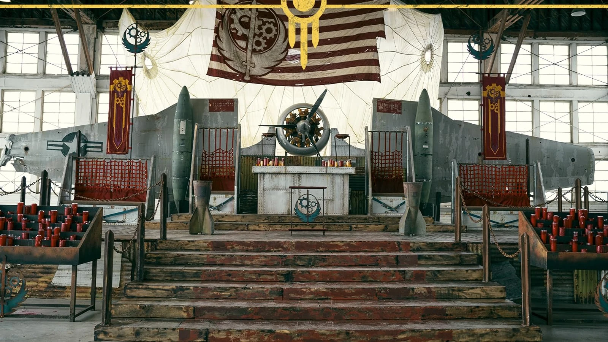
運び屋：「データストアの記録の1つに『束縛の鎖』についての言及があった。それは正確には何だ？」
ラモス：「ああ、それはブラザーフッドが創設された時から存在している古い、とても古い原則だ。基本的には『上官の命令には絶対に従わねばならない』という意味だ。ごく当たり前の常識だが、命令に従うことに対して文句を言う連中が出た時に、よくこれが引き合いに出される（行使される）んだ。興味があるなら、そのデータストアへのアクセス権をやろう。それを読む人間なんて、ここ何十年かで君が初めてだろうな」
ブラザーフッドの個々のメンバーに関しては、「組織への忠誠と防衛」が最優先事項であり、それをブラザーフッドは「神聖な義務」と見なしています。第二に「ブラザーフッドの使命への献身と忠誠」、そして第三に「直属の上官に対する献身と忠誠」が来ます。
B.O.S.のメンバーは、与えられた順序でこれらの規則に従うことが期待されています。もし直属の上官が組織や使命の利益に反する行動を取った場合、第三の規則（上官への服従）は、第二あるいは第一の規則によって無効化・上書きされます。
クレリック・フェリックス：「アスピラント（志願兵）・マキシマス。ブラザーフッドを守ることがお前にとって最も神聖な義務だ。そしてその後に、我々の『使命』を守ることがお前の最も神聖な義務となる。そしてその後に、お前の主（ロード）であるナイト・タイタスを守ることが、お前の最も神聖な義務となる。受諾するか？」
（TVシリーズ エピソード1『The End』より）
ロジャー・マクソンが、ブラザーフッドのために「騎士と従者」といった新しい伝統や神話（宗教性）を発明した目的は二つありました。
第一に、ブラザーフッドのメンバーから「戦前の軍と政府への繋がり」を完全に剥ぎ取ることです。これにより、生き残ったアメリカ軍の将軍や政府の政治家が現れたとしても、彼らの忠誠の誓いを利用し、世界に対して再び核の破滅を引き起こそうとするのを防ぐことができるからです（アパラチアにおける農務長官トーマス・エッカートのような事例です）。
第二に、核戦争後の生き残った者たちに「信じるべき理想」を与え、自分たちが何に身を捧げるのか、自分たちの人生の意義を見出させるためでした。彼がインスピレーションを得たのは古代の「西ローマ帝国の崩壊」からでした。帝国が内破した後、騎士たちや書記（スクライブ）たちが西洋文明の火を静かに灯し続けた歴史です。
このグループは人類の保存を確実にするため「技術の安全な保護」に注力し、最終的にはその技術を利用して、かつてのアメリカ大陸に再び安全・安心な社会を再建することを目指しています。2287年までにB.O.S.（特に東海岸）は国家建設という役割を受け入れ、実際に文明を復活させる計画を実行に移し始めました。
教育システム (Education system)
— スクワイア・デイン
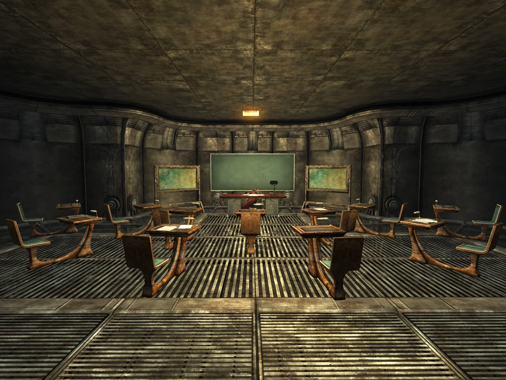
ブラザーフッドとして生まれたか、志願して参加したか、あるいは難民として迎え入れられたかにかかわらず、すべての者は一般的な教育を受けます。
B.O.S.は戦後の派閥の中で公式な「教育機関」を提供する数少ない勢力の一つですが、提供された情報を維持できるかどうかは個々のメンバー次第です。
ブラザーフッドにおいて、教育は非常に幼い頃から始まり、読み書きと英語を正確に話すことを教えられます。組織の子供たちは「学校」に通い、ブラザーフッドの歴史と文化から、戦争や戦闘戦術の教訓、さらに核融合、物理学、化学などの多くの科学的原理に至るまで、多種多様な授業を受けます。
『スクライブ（Scribe / 書記官）』たちは、これらの年少メンバーの教育を担当する責任を負っています。一部の支部では、子供であっても「スクワイア（Squire / 従者）」の階級を与えられることがあり、彼らはブラザーフッドでの将来に備えた実地訓練を受けます。スクワイアは、彼らの教育の一環として、B.O.S.の高位メンバーによって率いられる任務の「オブザーバー」として同行させられることがあります。彼らは戦闘そのものには参加せず、ただこれらの戦闘技術を直接目で見て学習するためにそこにいるのみです。
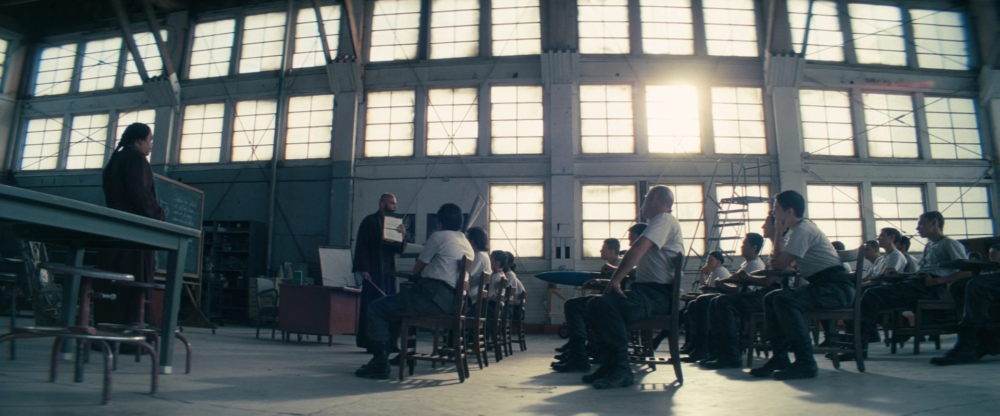
より高い年齢の者や外部から教団に参加したアウトサイダーの場合、まずは基礎訓練から始めつつ、さらに高度な教育を受け続けます。これには、将来の専門職に備えるための「ブラザーフッドの規則と規制のより深い教え込み（洗脳的な要素を含む）」が含まれます。
2296年（TVドラマ版）までに、アスピラント（志願兵）、イニシエイト（新兵）、そしてスクワイア（従者）の教育は、サンフェルナンドの騎士団における『クレリック（Cleric / 聖職者）』たちによって監督されるようになりました。
クレリックは、技術的および哲学的な知識を拡大するだけでなく、組織の「半宗教的な信念」を若きメンバーに植え付ける責任も負っています。教育環境は本質的に軍事直下型であり、注意を払わなかったり、秩序を乱したりする者に対する強烈な懲戒処分（暴力や体罰を含む）は日常茶飯事となっています。この段階を経たのち、大半の者は実働部隊へと割り当てられるため、その後の教育と訓練の多くは直属の上官やスポンサーの手に委ねられます。
財産と取引 (Property and trade)
内部経済 (Internal)
原則として、ほとんどのブラザーフッド支部は内部経済（独自の通貨のやり取り）を持たず、武器、アーマー、さらには人体拡張に至るまで、文字通り「必要性に応じて」リソースを割り当てています。
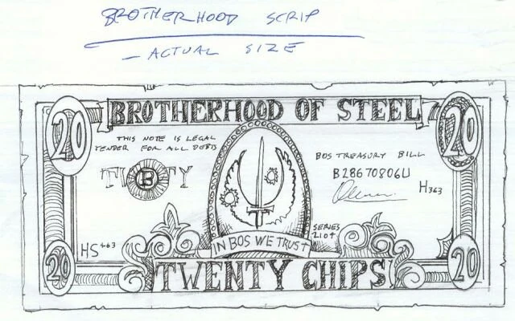
外部からの教団参加者（アウトサイダー）は特別なケースです。
彼らも基本的な装備品（ブラザーフッド・アーマーや弾薬の毎週の割り当て）や健康を維持するための食糧配給（Rations）は受け取ることができますが、ブラザーフッドが持つ「最も高度なサービス」を無料で受けるためには、最低でも10年間教団に奉仕しなければなりません。
Vaultの居住者：「やってくれ！」
ロリ：「申し訳ないけど、あなたはアウトサイダー（外部の人間）よ。あなたがブラザーフッドに10年ほど在籍したのなら、この手術を無料でしてあげることもできるけど。私たちにも経費というものがあるし、あなたはまだブラザーフッドの正規の労働メンバーではないからね」
（Fallout 1 より）
もちろん、高位の階級にある者はこの要件を迂回し、彼らの裁量で特殊な装備の割り当てを行うことができます（例えば、教団にもたらした多大な功績への報酬としてや、任務に必要なツールを提供する場合などです）。
私物以外のすべての装備はブラザーフッドによって厳重に支給・管理され、特に武器についてはシリアルナンバー（製造番号）で徹底的に追跡されています。
運び屋：「別のレーザーピストルを持ってこようか？」
イニシエイト・スタントン：「ダメだ。武器のチェックイン手順には、武器のシリアルナンバーの照合も含まれているから、別の銃を持っていけば一発でバレてしまう。それに、全く新しい銃が突然現れたら、ここで唯一のアウトサイダーである君の仕業だとすぐに疑われるだろう。いや、俺がこの窮地を脱する唯一の道は、君が俺の落としたあの銃を探すのを手伝ってくれることだけなんだ。手伝ってくれるだろ？」
（Fallout: New Vegas より）
食料配給（レーション）などの必需品は賭け事に使用されることもあり、一部の支部では「制限付きの内部取引」を導入しており、高階級の者が購入できるように上位の装備を予備として保管しています。
また、ブラザーフッドの特定の支部では内部取引専用の通貨体系（ブラザーフッド・スクリップ / Brotherhood scrip）を導入しているケースもあります。特に西海岸のブラザーフッドは、NCR-ブラザーフッド戦争中にNCRの国庫を襲撃して大量の金を強奪したことで、金銭的に非常に豊かであったと推測されています。
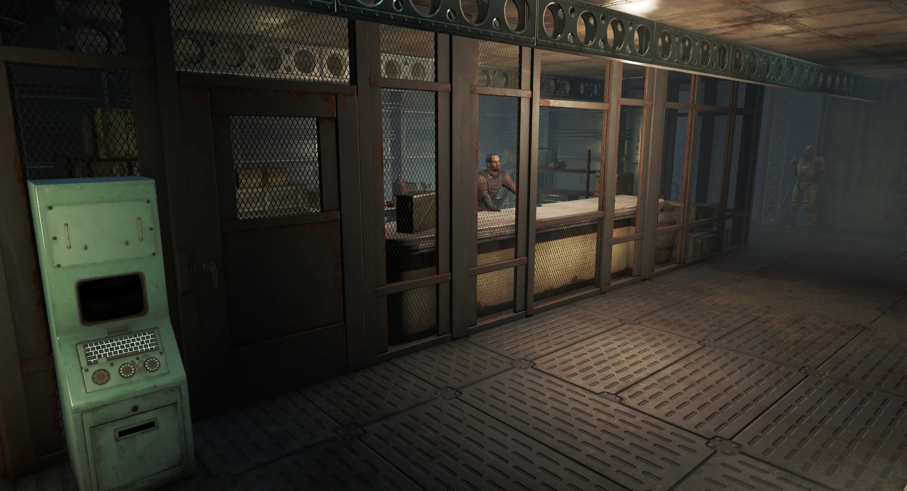
2280年代、東海岸でのブラザーフッドが成長と拡大を始めるにつれ、内部取引に関する新しい規則が導入されるようになりました。
組織は外部との貿易関係がより重要性を増すと考えました。貿易のレベルを高め、組織を維持・製造するための外部の物資を購入する能力を高めるため、エルダー・マクソンの指示のもとでプロクター・ティーガン (Proctor Teagan) がいくつかの変更を実施しました。
もともとブラザーフッド社会内では、ほとんどすべてのモノ・サービスが配給されていたため、内部での金銭取引はほとんど存在していませんでした。しかし外部との貿易が増えるにつれ、ブラザーフッドは経済と購買力を高めるため、内部通貨としてウェイストランド全体の基軸通貨である「キャップ（Caps）」を公式に採用・導入しました。
ブラザーフッドの補給係は、兵士の個人的な必要品などを「キャップを支払わせて」メンバーに販売し、これによって教団は外部と貿易するための資金（キャップ）の一定の流れを蓄え続けることができるようになったのです。
ティーガン：「大抵の新兵どもに『自分の装備は自分で買わなきゃいけない』と伝えると、皆俺を睨みつけてきやがるんだがな……ブラザーフッドへの物資補給にはキャップが要るんだ。全員が大義に貢献しなきゃならん」
ティーガン：「いい知らせとしては、キャップの安定した流入があるおかげで、お前が持ってきたものを何でも買い取れるようになったってことだ」
（Fallout 4 より）
また、これによって教団は、メンバーが外部から回収してきたアイテムや軍事技術をキャップで買い取ることができるようにもなりました（補償システム）。
もっとも、ナイト（Knight）などのより上位の士官になると、その階級への到達時にパワーアーマーやその他の高度な装備が教団から無料で「支給」されるため、彼らはこれらの基本装備にキャップを支払う必要はありませんが、アーマーをアップグレード・改造したい場合は自腹を切るか自分自身の手で行う必要があります。休日に外部へ出かけるための有給休暇などを申請することも可能であり、重要なミッションに従事していない限り、家族への手紙の送付なども許可されています。
外部経済 および各地域との取引状況 (External)
アパラチア (Appalachia / Fallout 76)
2080年代、ブラザーフッドは「レスポンダー」および「フリーステイツ」とのオープンな貿易関係を結んでいました。
レスポンダーからの食料、医薬品、その他の必須物資へのアクセスは、彼らとブラザーフッドとの関係の根幹を成しており、「サベージ・ディバイド」を横断するキャラバンが定期的に行き交っていました。ブラザーフッドは、当時アパラチアのほとんどの派閥が関与する貿易のハブであった「ホワイトスプリング・リゾートのモール」へも自分たちの特製プロテクトロン（Vendor bot Phoenix）を派遣し、商品を販売させていました。しかしすべての関係者にとって不幸なことに、この良好な関係は「スコーチ病（Scorched）」の危機が激化するにつれ崩壊することになります。

ブラザーフッドがアパラチア全土に広がるにつれ、2085年後半以降のある時期に、彼らはビッグベンド・トンプラザ東側に前哨基地を設立しました。そこに駐留する部隊はナイト・メリッサ・ライシュの指揮下にありました。
2088年、彼女はトンネルの反対側に定住している元レイダー集団のリーダー「キャロル・スウィーニー」と接触し、彼らとの貿易を確立しました。それからの数年間、ライシュの部隊はスウィーニーのグループに補給品を提供し、見返りとして元レイダーたちは彼らが集めた軍事的あるいは科学的価値のある廃品を提供しました。スウィーニーはこの取引が定住者たちにとって「一方的に有益」なものだと考えていました。ライシュはウェイストランドの定住者の世話をするという大義のもと、非常に寛大だったのです。
2103年、パラディン・レイラ・ラハマニの指揮下にある「第一遠征軍」がATLAS観測所に到着しました。
彼らは新たな拠点を「アトラス砦（Fort Atlas）」と名付けましたが、これを受けて彼らの存在はすぐさま地元の多くの請願者（Petitioners）たちを引き付けることになりました。彼らは非常に個人的な様々な理由から、B.o.s.のドアを叩きました。
【アート・ナップ（保護を求める無力な農夫）】
アート：「俺が欲しいのは公平な取引さ。昔、この『鉄（Steel）』の連中の話を聞いた事がある。連中はあちこち回って、人々から物を奪い取っていたらしいじゃないか。『大義のため』だとか何とか言ってな。そんなもん、レイダーと変わらねぇ。
俺の農場は多くを生産できねぇが、この余分な作物を渡す代わりに、あの鉄の兄ちゃん姉ちゃんたちにレイダーをうちの農場から遠ざけてほしいのさ」
【タリー・ラング（正体を隠したブラッドイーグルのメンバー）】
タリー：「私はただの貧しい田舎娘よ、わかるでしょ？ あのブラザーフッドの人たちが持ってるハイテクな銃があれば、どれだけ安心できることか。もちろん自衛のためよ！私と、哀れで無実な友達（※ブラッドイーグルの悪党たち）が大悪党から身を守るためのね！」
【エドガー・ブラックバーン博士（研究への支援を求める天才科学者）】
ブラックバーン：「あー、私はアパラチアの病を研究しているのだ。長きにわたり、人々は民間療法や急ごしらえの薬品に頼りすぎてきた。環境がもたらす長期的影響は憂慮すべき事態なのだ。ただ『放射能の中で生き延びられる』からといって、それが『安全』だという意味にはならないのだからね」
ラハマニの副官であったナイト・ダニエル・シン（Knight Daniel Shin）は、こうした部外者からの数々の要求に対し、一切の妥協をせず頑なに拒絶しました。農夫アートのローカルな紛争に巻き込まれれば本来の目標から逸れると信じ、タリーの胡散臭さを即座に見抜き、ブラックバーンの研究の「危険性」についても強く警戒しました。
シン：「ブラザーフッドは慈善団体ではないし、一般の民間人が個人的な興味を追求するために装備を提供するような使命は持っていない」
シン：「民間人を武装させることは、ブラザーフッドの職務ではない。話は終わりだ」
シン：「我々の仕事はテクノロジーを確保し、保護することであって、民間科学者が自らの研究を発展させるための資金提供を行うことではないのだ。もしあのブラックバーンという博士の研究が危険であることが判明した場合、ブラザーフッドは非常に『鋭い関心』を持って対処することになる」
しかし、一方でトップ階級にあるパラディン・ラハマニは、地元のコミュニティ（入植地：ファウンデーション）との貿易協定を大至急結びたがっていました。
ナイト・シンは「貿易協定に頼るのではなく、完全な自給自足こそがブラザーフッドを強くする」と信じて不快感を示しましたが、それでも組織の「命令系統（チェーン・オブ・コマンド）」が個人の見解よりも優先されるとして、ラハマニの判断に従いました。
最終的にファウンデーション（Settlers）との武器と引き換えにした取り決めについて、シンは「連邦の安全機構を教団の指導のもとに置けるなら相互に有益」と判断しましたが、ラハマニは「地域に軍事的な不均衡を作り出す」ことに後から懸念を抱くなど、両者の思想的対立があらわになっていきました。
また、ラハマニはアパラチアの巨大な貿易商「ブルーリッジ・キャラバン（Blue Ridge Caravan Company）」とも貿易関係を築こうと何度も頼み込みましたが、すべて断られました。ブルーリッジ・キャラバンの代表ジョアンナ・メイフィールドは、ブラザーフッドの軍靴に踏みにじられることや、利益の上前をピンハネされる危険性を警戒していたためです。それでも、彼らのキャラバンに属する商人「ミネルヴァ」などは、時折アトラス砦を訪れて様々な希少設計図の在庫を販売しています。
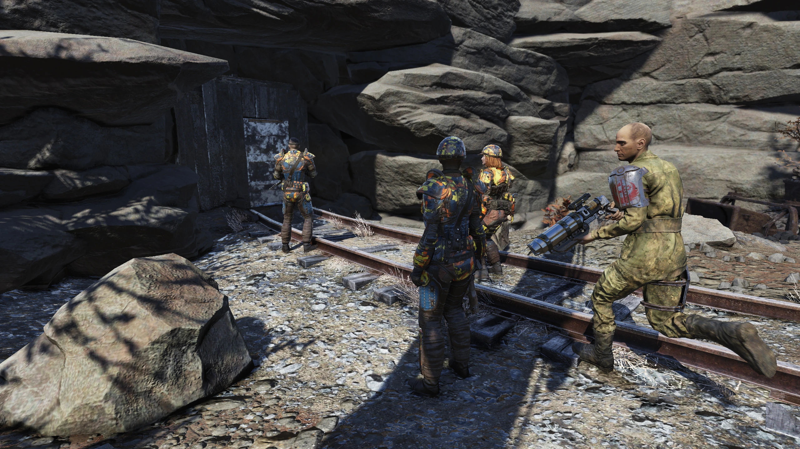
2105年、アトラス砦の極近隣である『メタル・ドーム（Metal Dome）』に、ブラッドイーグルから分派したテクノロジー兵器狂のレイダー集団「ラスト・イーグルス（Rust Eagles）」が拠点を構えました。
ご近所トラブルが勃発するかと思われましたが、スクライブ・バルデスによって派遣されたイニシエイト・パパスの技術回収チームは、このレイダー集団と「交渉」を行いました。「ラスト・イーグルス」は自分たちの集めた戦闘ロボットの性能を過激な実戦でテストする機会を欲しており、パパスらは「グラディエーターズ・オブ・スティール（Gladiators of Steel）」と名乗って、アリーナで彼らと血塗られた闘技を繰り広げることになりました。
この「一風変わったコロシアム」での実態は、ブラザーフッドにとってはライバルの戦闘データを収集し技術を回収する格好の機会でした。この彼らのアプローチはアパラチア支部の大多数からは異端で物議として見られましたが、バルデスからは強力な支持を受けていました。
ニュー・カリフォルニア (New California / Fallout 1, 2, TV)
2161年までに、ブラザーフッド・オブ・スティール（ロスト・ヒルズ本部）は、ファー・ゴー・トレーダーズ（Far Go Traders）やクリムゾン・キャラバン社（Crimson Caravan Company）と、武器と食料などの物資を定期的に交換することで、商業ハブである「ハブ（The Hub）」との強固な貿易関係を築き上げていました。
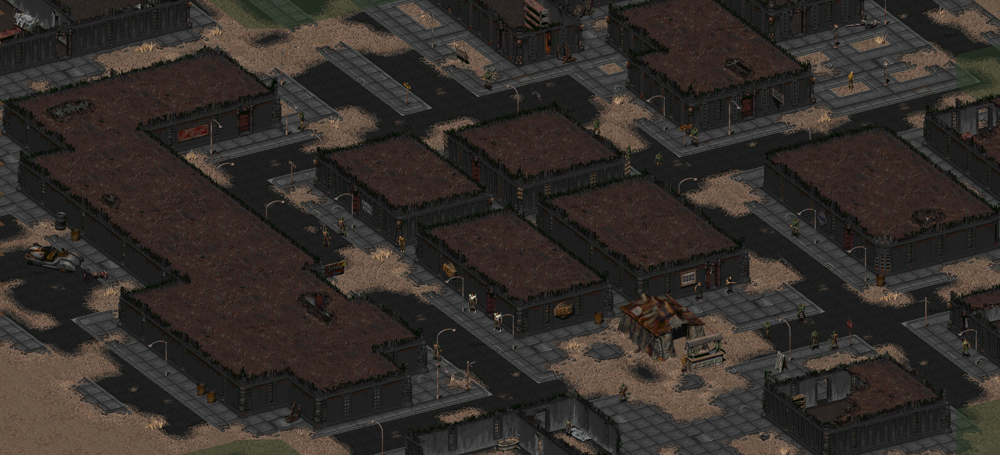
【ハイ・エルダー・ジョン・マクソン】
マクソン：「ハブはずっと南東にある。あそこは我々がここで作っている『武器』と引き換えに、食料とかの物資を取引してくれているんだ。もしあんたがそこに行くことがあったら、ブッチ・ハリスに話を聞いてみな」
【イニシエイト・キャボット】
キャボット：「彼ら（ハブの商人）は食べ事とかそういった物を持ってきて我々と取引をしてくれるのさ。俺たちは彼らに武器を渡す。最近はあまり来なくなっちゃったけど……ああ、理由は分からないや」
【ケリ・リー（クリムゾン・キャラバンの商人）】
ケリ：「それで、あのクソジジイがあんたをうちで働かせることにOKを出したってわけね？ なら、あんたは相当の度胸の据わった男／女なんだろうね。感心したわ、でもお手並み拝見といきましょう。私たちは月に2回、3日と17日にだけ出発するの。できる？ 私たちが行くのは地元のホットスポットばかりよ。ブラザーフッド・オブ・スティール、ジャンクタウン、ネクロポリス、そしてボーンヤードね」
この時期までに、ブラザーフッドは地域内における「武器の最大級のディストリビューター（供給者）」へと成長していました。ハイ・エルダー・ジョン・マクソンは、文明化されたウェイストランドで見られる武器の大部分を製造または流通させているのはブラザーフッドであると言及しているほどです。
また「ウォーター・マーチャント（Water Merchants）」も、ブラザーフッドの膨大な武器の備蓄と引き換えに、大量の「水」を提示することで公式な貿易関係を築こうと試みました。ブラザーフッドがこの申し出を拒否した際なんと商人は武器を盗むための窃盗団を潜入させました。彼らはブラザーフッドにあっさり捕まりましたが、エルダーたちはハブへ報復措置（報復攻撃）に出ることを投票で否決しました。
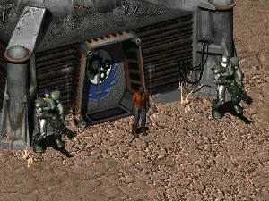
2189年に行われた投票の結果、ハブは拡大しつつある新カリフォルニア共和国（NCR）に吸収されました。これにより、ハブ商人たちと同盟関係にあったブラザーフッド・オブ・スティールと、ハブを支配下に置いたNCRとの間での貿易が始まりました。これには標準的な物々交換だけでなく、「より高度な技術的兵器」の交換も含まれていました。両者はこの時期、穏健な関係（Moderate terms）を保っていたからです。
この「不安定な関係」はNCR軍とブラザーフッドが技術の独占に関する方針を巡って「NCR-ブラザーフッド戦争」へ突入する2250年代まで続くことになります。
質問者：「エンクレイヴの崩壊後、ブラザーフッド・オブ・スティールはNCRとどのように関わったのですか？」
クリス・アヴァロン：「詳細は不明です。おそらく、彼らはFallout 1の出来事の前からNCRと何らかのレベルでの共存関係を確立していたのでしょう。NCRの一部の州が『マクソン（Maxson）』と名付けられていること（Lost HillsバンカーがそのままNCRの町になったわけではありませんが）、そしてFallout 2の時点ですでに『州』の一つになっていた商業拠点ハブと彼らが以前から結びついていたことを考えれば想像がつきます。私はいつも、NCRとB.O.S.は、両グループ間で「物々交換」と「（一部の）技術の共有」を行いながら、不安定な休戦状態を守り続けているのだと想像していました」
2296年（TVドラマ版）において、サンフェルナンドの騎士団のメンバーは、必要に応じてニューカリフォルニアの地元の人々と商品やサービスの取引、物々交換を行う姿が確認できますが、彼らは教団内通貨ではなく地域の経済通貨である「キャップ」での支払いを期待されています（スクワイア・マキシマスがフィリーの町を訪れた際、地元の店でパワーアーマーを修理してもらったシーンなど）。
キャピタル・ウェイストランド (Capital Wasteland / Fallout 3)
2272年以降のいずれかの時期、ブラザーフッドは「ギャラクシー・ニュース・ラジオ（GNR）」のホストを務める凄腕のDJ、スリードッグ（Three Dog）からある提案を持ちかけられました。彼はキャピタル・ウェイストランドの多数の脅威から身を守る「保護」を求めており、その保護をしてくれる見返りとして、ブラザーフッド・オブ・スティールがGNRビルディング広場に「前哨基地」を設立することを許可するというものでした。
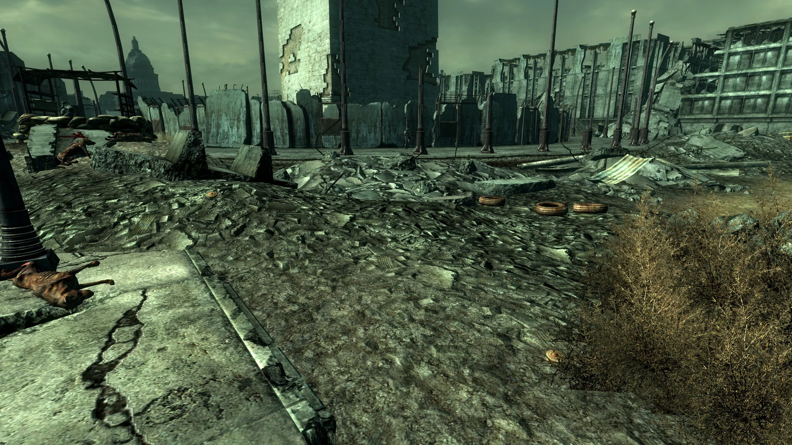
放浪者：「あんた（スリードッグ）がまだ生きていたなんて驚きだ」
スリードッグ：「ああ、俺の目と目の間に喜んで弾丸を撃ち込みたがるような敵は掃いて捨てるほどいるぜ。俺が今生きていられる唯一の理由は、サラ・リヨンズとブラザーフッドのおかげさ。俺たちは最高の取引を交わしたんだ。彼女らが俺を昼寝のまま永遠の土の中に埋められないように守り、俺が彼女らの頭の上に頑丈な屋根を保つっていう取引をな」
放浪者：「GNRについて他にも教えてくれないか？」
サラ・リヨンズ：「そうね、ブラザーフッドは安全な前哨基地を必要としていたし、ラジオ放送局を運営しているあの男はスーパーミュータントに頭を引きちぎられないための守りを必要としていたの。互いに有益な関係というわけよ」
これはブラザーフッドにとって非常に有益であると見なされました。なぜなら、彼らは前哨基地として使用できる戦略的拠点を手に入れただけでなく、その新しい同盟者が「この地域で唯一生きているラジオ放送局を運営していたから」です。
彼らはナイト・サージェント・ウィルクス率いる部隊を派遣してGNRプラザの防衛に当たらせました。一方、パラディン・ベリングスが率いる別の部隊（第2記念碑防衛分遣隊）は「モール（the Mall）」へと派遣され、見事「ワシントン記念塔（Washington Monument）」を占拠しました。この記念碑の頂上の尖塔には、GNRのラジオ信号を中継するために使用されるパラボラ送信機が含まれていたからです。
自身の命を守り、GNRの放送を続けさせてくれた見返りとして、スリードッグは連日ラジオの電波を使い「ブラザーフッドの英雄的な偉業」についてのポジティブはニュースを流し続けました。これにより、ブラザーフッドへの世論の評価は確実に向上し、新兵の採用と教団への積極的な支援を後押ししました。
2277年にエンクレイヴが姿を現し、彼らとブラザーフッドとの戦争が始まった後、スリードッグは「エンクレイヴのラジオが垂れ流すプロパガンダ放送に、自分自身のブラザーフッド応援プロパガンダで対抗すること」を自らの義務であると見なすようになりました。
「ブラザーフッドのお友達がいなかったら、キャピタル・ウェイストランド全体はずっと昔に完全に蹂躙されていただろうな。彼らは最近、みんなが大好きな化物、スーパーミュータントの目撃情報が増加しているのに対応して、D.C.のダウンタウンの廃墟のパトロールを強化したんだ。ブラザーフッド・オブ・スティールの少年少女たちは、正義の戦いを止めないぜ、みんな……」
「さて、子供たちよ、美しきブラザーフッドが、あのエンクレイヴのクソ野郎どもが残していた最後の基地を粉砕したことを発表できて、本当に嬉しいぜ！ブラザーフッド・オブ・スティールは、プロジェクト・ピュリティと呼ばれる新しい最先端の蛇口で、負け犬どもを片付けたんだ。でも彼らはそれだけじゃ終わらなかったのさ！」
しかし、「スーパーミュータントとの終わりなき戦争」が続くにつれ、ブラザーフッドは自分たちがウェイストランド中に分散しすぎており、パトロール隊や小規模部隊との通信と生存状況の確認に多大な問題を抱えていることに気付きました。そしてエンクレイヴが戻ってきたことで、リソースは限界まで引き伸ばされてしまいました。人員がすべて最前線への支援に割かれた結果、戦死した同胞の「回収作戦」を行う組織の能力が著しく低下してしまいました。
これにより、東海岸支部の主席司書であったプロクター・ジェイムソン (Proctor Elizabeth Jameson) は、戦死したブラザーフッドの「ホロタグ（認識票）」の回収業務を、一般のウェイストランド人やスカベンジャーに「外部委託」するという苦肉の策へと至ることになります。
彼女は、回収された『ホロタグ』1枚につき、キャップや教団が製造した高度なテクノロジー技術をウェイストランド人に報酬として支払うと申し出ました。すべては組織の『記録（Scrolls）』に、高貴な死を遂げた部隊の記録を正確に残すための取引でした。
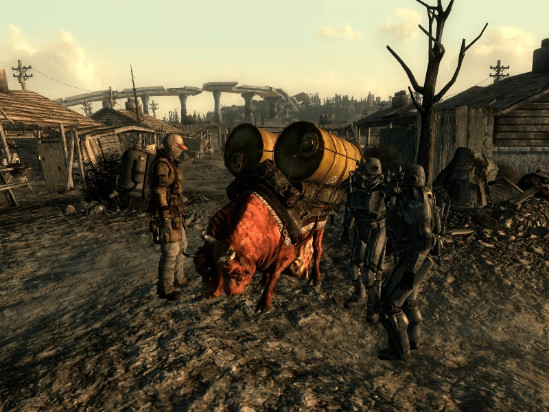
2277年、キャピタル・ウェイストランド支部の補給係（Quartermaster）であったナイト・キャプテン・ドゥルガ (Knight-Captain Durga) は、エルダー・オーウェン・リヨンズからの直接の命令により、「外部の人間との取引」を厳しく禁じられていました。しかし、エルダー本人の明確な許可や指示があった場合のみ、例外としてこの取引に応じることがありました。
そして2278年、エンクレイヴによるプロジェクト・ピュリティの支配が崩壊した後、ブラザーフッドはキャピタル・ウェイストランドのいくつかの居住地（集落）との間でついに公式な取引を開始しました。中でも「リベット・シティ（Rivet City）」は、ブラザーフッドの最初の、そして最大の貿易パートナーとして並外れた重要性を持つようになりました。
両グループは、キャピタル・ウェイストランド全土の居住地へ「アクア・プーラ（Aqua Pura / 完全に浄化された水）」の出資を分配するために、緊密に協力し始めました。
ブラザーフッドは、水輸送のキャラバンをレイダーやスーパーミュータント、そしてタロン・社の傭兵から保護してくれる「見返り」として、彼らがエンクレイヴから回収した戦利品やキャップをリベット・シティの警備隊（Security force）に「無料」で提供しました。
ブラザーフッドはエンクレイヴとの戦争で大量の資源と人員を消費していたため、彼ら「単独」ではすべての水を保護して遠隔地へ輸送することができなかったからです。
放浪者：「キャラバンを派遣するのに、報酬は支払われるのか？」
ビグスリー：「皆『プロジェクト・ピュリティだ』『プロジェクト・ピュリティだ』って大騒ぎしていた。でも誰か『ねえ、その大量のきれいな水を使って何をすればいいの？』って立ち止まって尋ねたか？
当然、お前は支払われるさ。我々の『資産』の大部分はエンクレイヴとの戦争で使い果たされてしまったが……私ほどの知恵者ならどうとでもなる。心配するな」
この取り引きは最初は双方にとって非常に有益なものでしたが、時間とともにキャラバンへの襲撃が激化し、リベットシティ側はこのやり方に論理的な疑問を抱くようになりました。「ブラザーフッドはどうして、水を完全に無料で配布することにこだわるのか？水を『商品』にして高値で売りさばき、商人にその利益で『自分たち自身の保護』をさせればいいではないか」と。
実際、この「完全無料」の体制は無理が生じていました。
アクア・プーラの配達は、公式には悪名高い「アンダーワールド」のグールたちへは適用されていませんでしたが、スクライブ・ビグスリーはエルダー・リヨンズの「無料で水を配給せよ」という直接の命令に背き、密かにアンダーワールドのグリフォン (Griffon) というグールに水を「販売（売買）」し始めていました。
ビグスリーは、キャップとテクノロジーという見返りを受け取ることで不足していた他の水キャラバンのための資金をひそかに補助していたのです。
しかしビグスリーの知らないところで、このグリフォン・というグールは買い取ったアクア・プーラの中身を捨て、代わりに普通の汚染水を入れた瓶を「アクア・クーラ（Aqua Cura / グール化を治す特効薬）」と偽って無知なグールたちに高値で売りつけ、本物の「アクア・プーラ」の方はレイダーや奴隷商人、そして水を受け取れないブラザーフッド・アウトキャストへとさらに高値で転売するという卑劣な商売を行っていました。
とはいえ、このような腐敗問題が発生しつつも、水分配ネットワークは稼働を続け、ブラザーフッドは地元のスカベンジャーや熟練の商人とますます取引を重ねながらキャピタル一帯のコントロールを確立していきました。
ブラザーフッド・アウトキャスト (Brotherhood Outcasts)
リヨンズの慈善事業から完全に離反した、インディペンデンス砦（Fort Independence）のプロテクター・ヘンリー・キャスディン (Protector Henry Casdin) が率いる「アウトキャスト」たちは、水や人助けには一切興味がありませんでしたが、地元での取引は積極的に行っていました。
彼らは、ただの鉄クズ（Scrap metal）からエンクレイヴの高度なパワーアーマー、さらにはエイリアンの兵器に至るまで、ウェイストランドにあふれる「あらゆるテクノロジー」を見つけて砦に届けてくれる熟練のウェイストランド人（傭兵）を雇うことに強い関心を抱いていました。
【アン・マリー・モーガン】
モーガン：「ウチら（アウトキャスト）は新規募集なんてしてないよ。アホの老いぼれリヨンズならそこら辺を歩いてるヤツでも信頼するかもしれないが、私たちは違う。
でも……まあ、もし手伝いたいって言うなら、取引くらいならできるかもしれないね。あんたが『テクノロジーデバイス』を持ち込めば、そのデバイスに応じた『紹介料』を払ってあげる。でも、まずはプロテクター・キャスディンの許可を取る必要があるよ」
【プロテクター・ヘンリー・キャスディン】
放浪者：「もうちょっと仕事について詳しく」
キャスディン：「簡単なことだ。テクノロジーのデバイスを持ち込んでくれれば、見つけた物に応じて報酬を支払う。パワーアーマーやエネルギー兵器みたいな大物がベストだが、センサーモジュールやスペアパーツのようなものでもいい。何が重要になるか分からないからな。
その見返りに、5.56mm弾、グレネード、スティムパック、またはRad-Awayのいずれかを報酬として支払おう。外でお前が生き残るには、そっちの方がずっと役に立つだろう？」
ただし、アウトキャストは「自分たち（アウトキャスト）のパワーアーマー」を拾って回収してきても、それに対して報酬を支払うことは拒否しました。（「ウェイストランドでただ拾ったから返してやる？バカ言え、そんなものに報酬を払う間抜けがどこにいる」）。
しかし、この「雇われスカベンジャー」が大量のテクノロジーを提供して自身の価値を証明した場合、彼らは「アウトキャストの友（Friend of the Outcasts）」と見なされ、インディペンデンス砦へ自由に入ることを許され、手に入れたアウトキャスト・パワーアーマーを没収されることなく自分自身のために保持することすら許可されました。
連邦 (The Commonwealth / Fallout 4)
2287年までの間のいずれかの時点から、再統一された東海岸本部（Commonwealth Brotherhood of Steel支部）は、プロクター・ティーガンが提案した驚くべき「新しい貿易支援戦略」を導入して成功を収めていました。
彼らは連邦のキャラバン貿易を監視するために「ベルチバード」を利用し、商人が敵対勢力に襲われた際に劇的な航空火力の支援を提供するようになりました。
これは単に人々を救うだけでなく「彼らの信頼を勝ち取り、取引や購入の見返りとして、はるかに有利な『卸売価格』（割引）を引き出すため」の完全な費用対効果に基づいた武力威圧的な戦略だったのです。
モハビ・ウェイストランド (Mojave Wasteland / Fallout: New Vegas)
エルダー・ノーラン・マクナマラ率いるブラザーフッドのモハビ支部は、「オーペレーション・サンバースト（ヘリオス1防衛戦）」において新カリフォルニア共和国（NCR）に大敗を喫し、支部に所属する騎士とパラディンの少なくとも半分（その中には最も経験豊富な軍事メンバーも含まれていました）が全滅するという致命傷を負った後、極秘バンカーであるヒドゥンバレーにて完全なる「ロックダウン体制」に入りました。
マクナマラ：「ベロニカ。君が無事で——」
ベロニカ：「お土産を持ってきたわよ。ヘリオス1の秘密を解き明かしたの」
マクナマラ：「何だって？それは素晴らしいニュースだ！」
ベロニカ：「いいえ。そうじゃない。アルキメデスIIは軌道上レーザー兵器よ。屋外の限られた半径でしか効果がなく、充填にも長い時間がかかるの」
マクナマラ：「敵の手に渡れば——」
ベロニカ：「大して効果に違いはないわよ。私たちはたかが『大仰な大砲（ただのガラクタ）』を守るために、支部のほとんどを失ったのよ！」
この状況はモハビ支部に、兵站と補給に関する深刻な問題を突きつけました。ブラザーフッドは「軍事技術」にのみ焦点を当てていたため、『自給自足（農業）』を行うために必要な科学技術を採用し、兵士たちの食料を生産し始めるという改革を強硬に拒否しました。
運び屋：「彼らのために何をしているんだ？」
ベロニカ：「私は調達のスペシャリストよ。言ったでしょ、基本的にはただの『食料品の買い出し』みたいなものよ。ただし、その食料品がガラクタのパーツや古代のテクノロジーだったりすることもあるけど。彼らのために188取引所みたいな場所の商人と取引するのに派遣されてるの。でも時々、私を厄介払いしてるだけじゃないかとも思うけどね」
運び屋：「農業テクノロジーだって？」
ベロニカ：「そんなところね。植物の成長を促進させる技術らしいわ。NCRの科学部門がマッカラン空港に本部を構えてるの。たぶんあの連中が何かを見つけたんでしょ。まあ、彼らも秘密を守るのが下手くそだったってことね。
ウチら（B.O.S.）は絶対にそんなもの追いかけない。だってそれは『武器じゃない』から。でも、自給自足はウチらにとっても根本的な問題なのよ。もしそれがうまくいけば、連中（長老たち）も別の道を選ぶ価値に気づくかもしれないわね」
結果として、モハビ支部は「外部との秘密裏の取引」を余儀なくされました。スクライブ・ベロニカ・サンタンジェロのような「潜入調達スペシャリスト」を地上の188取引所などに派遣し、ブラザーフッドの武器を旅の商人が持つ食料やその他の生活物資と交換させることで、かろうじて糊口をしのぐことになったのです。なお、支部の補給係であるナイト・トーレスは、エルダーの許可なく外部の人間と取引しないよう厳命されていました。
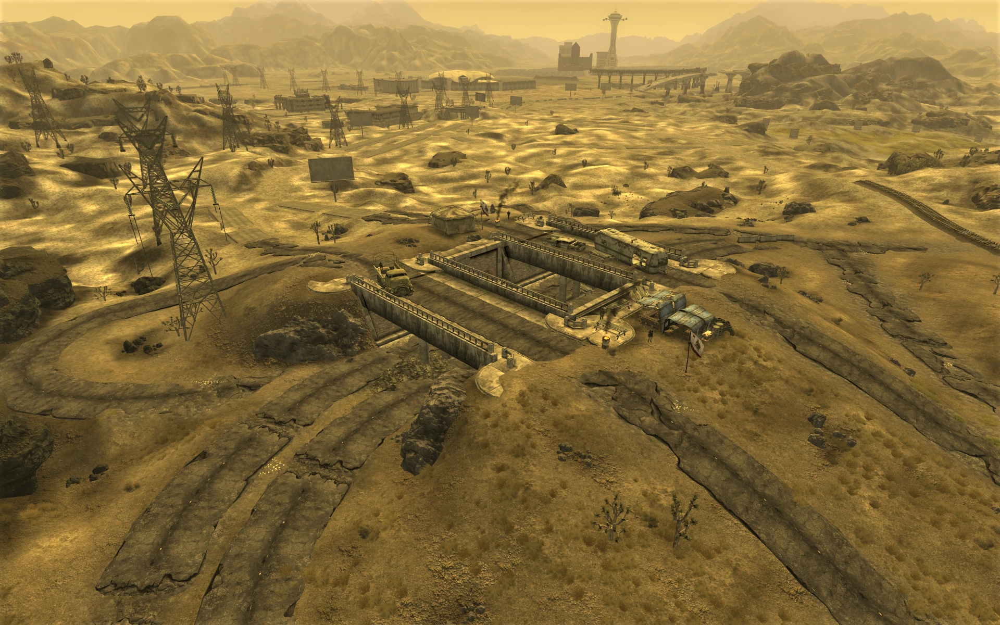
連邦 (The Commonwealth / Fallout 4)
2287年までに、ケンブリッジ警察署を拠点として活動していた連邦のブラザーフッド（先遣隊）は、価値あるテクノロジーの提供と引き換えに、ウェイストランド人に「キャップの報酬（補償）」を提供し始めていました。パラディン・ダンスによれば、ブラザーフッドは商品やサービスに対する見返りの必要性を強く信じており、何であれ借りたものには何らかの形で必ず報いるとされています。（ディープレンジ送信機の回収任務など）。
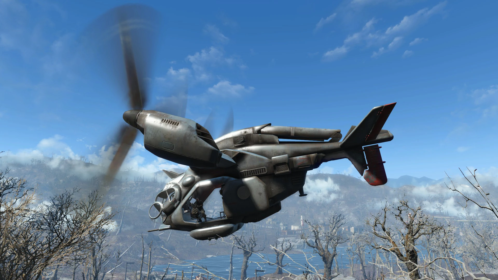
ブラザーフッド・オブ・スティールの巨大な増援（プリドゥエン）が連邦に到着した直後、プロクター・ティーガンはランサー・キャプテン・ケルズに対し要求を送り、地元のキャラバンとの「貿易関係」を確立することを提案しました。
これは前述のように、キャピタル・ウェイストランドで大きな成功を収めた「商人を襲撃から保護する見返りに有利な価格（割引）を得る」というベルチバード護衛戦略を用いるものでした。ティーガンによれば、人々がインスティチュートの脅威に絶えず怯えて暮らしているここ「連邦」においては、この軍事的かつ経済的なアプローチはさらに大きな効果を発揮すると見ていました。
また、ティーガンは教団内で不足し始めていた「弾薬」と交換するために、あまった医療物資（余剰在庫）を外部に販売する計画も立てていました。
もしブラザーフッドがインスティチュートとの戦争に勝利した場合、彼らは連邦最大の居住地「ダイアモンドシティ」との公式な貿易関係を確立し、数名のメンバーを定期的に「市場」への補給任務に派遣するようになります。こうした補給部隊の兵士たちは、ブラザーフッドが街の外に「重火砲」を留めておくことに同意する限り、街の住人から歓迎されます。
街の住人は、彼らが取り引きの際にぽんぽん気前よく大金を落としていくことに気付くでしょう。兵士たち自身も、この任務が厳密には補給というより「地域との親善（Good will effort）」を兼ねたパフォーマンスであると推測しています。
徴発 と 没収 (Confiscations)
戦争のような極端な状況下、あるいは「絶対的不可欠」と見なされた場合、ブラザーフッドは民間人の移住地や他のグループから、物資や技術を「強制的に要求（徴発）・没収」することで知られています。ただし、もちろん最初は外交的なオプション（交換取引など）が追求されます。
アパラチアにおける徴発
アパラチア支部の初代リーダー、エリザベス・タガーディが率いた部隊は、民間人を信用しないことで知られ、いくぶんの「孤立主義者」でした。これは民間兵のE.フィッシャーなどの脱走や物資泥棒などによってさらに悪化しました。
初期のうちはハンターズビルの戦いなどで「レスポンダー」と協力し、物資の交換なども行っていましたが、2094年1月までにアパラチア全体を「スコーチ病（Scorched Plague）」が襲う危機に直面すると、ブラザーフッドは他の派閥に対するすべての善意（の対応）を使い果たしました。
彼らは物資を確保するために「武力の行使（強制的な徴発）」に頼るようになり、フリーステイツからサンダーマウンテン発電所を奪うために圧倒的な火力を誇示したり、エイミー・ケリーが開発したセンサー技術を引き渡すよう要求し、レスポンダーのリーダーであったマリア・チャベスの頭に銃を突きつけたりしました。
もっとも、当時のブラザーフッドはアパラチアの全当事者を救うために単独で特攻・自滅するほどの絶望的な脅威（スコーチ）と戦っており、状況が極限に達していたための苦肉の徴発であったことも言及する価値があります。
【ショーン・ホックマンからの窃盗被害の訴え】
居住者：「問題が何か教えてくれ」
ショーン：「問題はだな、ブラザーフッドのピエロどもが現れて、俺の持ち物を銃を突きつけてごっそり持っていきやがったことだよ。
俺は平和主義者なんだ。武装したチンピラどもが、俺がやりくりして集めたわずかな物資を『徴発』だの何だのと奪っていくのに対抗する装備なんて持ってねぇ。
俺はずっと、レイダーがなぜそんな真似をするのか理解できなかったが、今回の件でよく分かったよ。少なくともレイダーの奴らは『俺たちは正義の味方だ』なんて嘘はつかねぇからな」
【対応するナイト・ダニエル・シン】
居住者：「ショーン・ホックマンがブラザーフッドを名乗る人々に強盗されました」
シン：「あり得ない。何が起きたにせよ、それは我々の仕業ではない」
居住者：「これを行った連中を見つけ出したくありませんか？」
シン：「外には数え切れないほどの盗賊がいるんだ。彼らの犯罪を一つ一つ追跡するのは、ブラザーフッドの仕事ではない。
誰かがこうしてブラザーフッドの『名誉』を悪用していると聞くのは不愉快だが、しかしそれ以上の事実を変えるものではない」
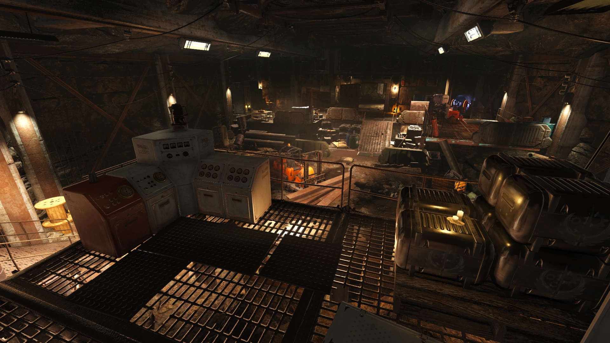
2103年には、こうしたブラザーフッドの方針を逆手にとり、パワーアーマーと武器を身につけ彼らの「寄付活動（徴発）」を装って旅人からキャップを奪う盗賊団『ブラザーフッド・オブ・ジール（Brotherhood of Zeal）』の存在すら確認されています。
しかし同年の間に、第一遠征軍はアパラチアのいくつかの派閥（ファウンデーションの入植者、クレーターのレイダー、ブラッドイーグルス）から、教団の所有物であった超強力なロケットランチャー『ヘルストーム・ミサイルランチャー』を強制的に没収しなければなりませんでした。
これらの兵器は民間人に対して誤用され、射撃場での事故などによってファウンデーションの警備隊が複数死亡する事態すら引き起こしていました。ブラザーフッドは、彼らの財産を再回収し、危険な兵器のこれ以上の使用を防ぐことが自らの「義務」であると考えていました。
ニューカリフォルニア（NCR）との対立
2250年代から2260年代のある時期に、ブラザーフッドは新カリフォルニア共和国（NCR）に対して極めて攻撃的・反動的な方針を採用しました。彼らはNCRの手から戦前の高度な技術（特にエネルギー兵器）を強制的に接収しようと試み、地域全体でのこれらの技術へのアクセスを制限・管理し始めました。これが最終的に「NCR-ブラザーフッド戦争」を引き起こすことになります。
運び屋：「なぜエネルギー兵器を扱わないんだ？」
アレクサンダー：「かつては扱っていたさ。だが、エネルギー兵器を載せたキャラバン隊が、ことごとく待ち伏せされて全滅させられたんだ。しかも、どの武器がエネルギー兵器か正確に見分けられるほど洗練された連中の手によってな。
俺たちはあれが『ブラザーフッド・オブ・スティール』の仕業だと考えている——あの狂人どもは、エネルギー兵器となると常に目が血走ってるからな。だがNCRは、彼らを全滅させたと思い（事実から目を背けたい）がっていてな」
これらの偽装攻撃・窃盗行為に実際にブラザーフッドが関与していたのかは確認されていませんが、ガンランナーは絶え間ないキャラバンの損失に対処するよりも、エネルギー技術から完全に手を引くこと（市場をヴァン・グラフ一族に譲り渡すこと）を決定しました。
さらに、他のグループがブラザーフッドの「テクノロジー（エネルギー兵器）のためなら手段を問わないという評判」を自分の利益のために利用するケースすら出始めます。
例えば、ヴァン・グラフ一族とクリムゾン・キャラバンは、競争相手であるキャシディ・キャラバンなどの競合他社を襲撃（または抹殺）するために同盟を結び、その襲撃の隠れ蓑として「ブラザーフッドの攻撃による全滅」を偽装する卑劣な工作を行っていました。
連邦における強制徴用
2287年のインスティチュートとの戦争中、連邦におけるブラザーフッドは必要に応じ、民間の居住地から食料などの「物資の強制的な接収」を行う能力があることで知られていました（居住地を軍事支配し、農作物の提供を強要する）。
もし居住地の住民が作物の寄付や支払いの受け入れを拒否した場合、威嚇や脅迫が用いられ、最悪の場合は居住地そのものが「制圧（接収）」される可能性がありました。プロクター・ティーガンの言葉を借りれば、「彼ら（入植者）が我々の味方でないなら、敵である」ため、任務を完了するためなら入植者のリーダーの排除（暗殺）すら容認されていました。
ただし、ティーガンによれば、これらの徴発作戦についてはエルダー・マクソンや上層部から「公式な許可（正式な軍事作戦としての承認）」を完全には得ていなかった（または黙認されていた）部分もあったようです。
グリフィス天文台への襲撃 (TVドラマ版)
2296年、サンフェルナンドの騎士団（Knights of San Fernando）は、東海岸の司令部から、エンクレイヴの脱走兵シギ・ウィルジグから重要な軍事テクノロジー（後に常温核融合＝Cold fusionの研究であると判明）を追跡し、回収・接収せよとの命令を受けました。
このテクノロジーをめぐる捜索は、リー・モルデイヴァーが率いる「ボーンヤードのNCRの残党」とブラザーフッドとの間の開かれた敵対関係を再び再燃させました。
問題のテクノロジー（首）がNCR残党の手に渡った際、サンフェルナンドの騎士団は総攻撃の行動を起こしました。
彼らは、この地域におけるNCRの本部として機能していた「グリフィス天文台（Griffith Observatory）」を急襲。熾烈な近接戦闘の後、ブラザーフッドは天文台と常温核融合リアクターを制圧し、この失われた技術を接収することに成功しました。
この常温核融合技術は、ブラザーフッドにとって極めて重要なものであると描写されており、「国家を破壊する深い可能性、あるいは国家を救済する深い可能性を持った物体」と見なされています。
組織体制と信念体系 (Social & Belief System)
社会構造 (Social structure)
（メイン記事：Brotherhood of Steel hierarchy）
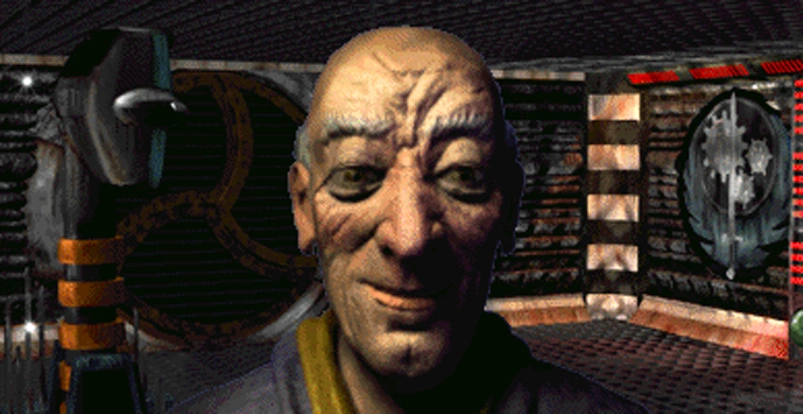
ブラザーフッド・オブ・スティールには、メンバーの社会構造内での立場を定義するいくつか明確な「階級（クラス）」があり、厳格なヒエラルキー（階層構造）が各メンバーの位置を区別しています。
ブラザーフッドは本来、本質的に『平等主義（egalitarian）』であり、男性メンバーも女性メンバーも等しくどの階級へも昇進することが可能です。さらに言えばブラザーフッドの創設当初は、女性メンバーも『シスター』ではなく『ブラザー（兄弟）』と呼ばれていました。
ただし、この完全な男女同型の呼称は、東海岸の支部には引き継がれませんでした（東海岸では女性兵士には明示的にシスターと呼ばれるようになっています）。
ジェニファー：「ブラザーフッドの女性も『ブラザー（兄弟）』と呼ばれるんだよ。ウチらは女性を『シスター（姉妹）』とは呼ばない。結局のところ、ここは『ブラザー・アンド・シスターフッド・オブ・スティール』じゃなくて『ブラザーフッド・オブ・スティール』だからね」
さらに、同性愛関係などは一般的に許容はされていますが、外部の人間から新兵を採用しない彼らの「孤立主義的な戦術と方針（支部や時代によって異なりますが）」のおかげで、彼らは「教団の血を絶やさないため」に生殖に至る関係を追求するよう圧力をかけられています。
運び屋：「恋をしたことはあるか？」
ベロニカ：「詮索好きだな？ 私も昔はそうだったよ。ウチらはまだかなり若かったけど、あれは愛だったと思いたいわ」
運び屋：「どうなったんだ？」
ベロニカ：「彼女はブラザーフッドを去ったの。彼女の両親と少し距離を置きたがっていたんだと思う。ウチらの会員資格は部外者には開かれていないから、一部のメンバーはそれが『私たち全員に生殖を義務付けている』って考えてるのよ。彼女の両親がどちらの陣営に属していたか、あなたなら想像がつくでしょ」
運び屋：「彼女と一緒に行かなかったのか？」
ベロニカ：「行かなかったわ。他の皆を置いていく気にはなれなかった。彼女を引き留めるよう説得することもできなかった。愛があれば彼女の決断に影響を与えられると期待していたけど、それは十分じゃなかったわ。ウチらは二人とも頑固すぎたのよ。彼女が今どこにいるかは知らないけど、立ち直っていると確信しているわ。でも今でも彼女のことは考えるの。時々だけどね」
2277年のキャピタル・ウェイストランド支部では、非軍人階層である「スクライブ」が、以下の3つの明確な下部組織（オーダー）に分割・編成されていました。
- 剣の騎士団 (The Order of the Sword) - 銃や弾薬を含む「攻撃的性質」のある武器の研究と開発を担当。
- 盾の騎士団 (The Order of the Shield) - パワーアーマーや防御構造物を含む、人々を保護するための防衛的研究を担当。
- 羽ペンの騎士団 (The Order of the Quill) - データの検索とアーカイブを担当。あらゆる種類の本やホロテープを探し出して保存し、ブラザーフッドの『歴史』を記録する。
教団の創設当初は人間のあらゆる階層から人材を採用し、民間人の防衛にも直接関与していましたが、ブラザーフッドが真に「孤立主義的」な政策を開始したのはロジャー・マクソンの死後のことでした。
そして、しばらくの間、非常に将来有望な才能を示す者を例外として「部外者」がブラザーフッド・オブ・スティールに参加することは非常に稀になりました。
ウェイストランド人（Wastelanders）を積極的に採用した支部では、時代が経つにつれその結果に大きなバラつきが見られ、「生まれながらの教団員（ネイティブ）」であるメンバーは彼らを無謀だと見なす傾向があり、一種の階級差を生み出しました。（特にキャピタル・ウェイストランドの派兵先で大量に現地採用された者たちの、攻撃的で規律がなく、好戦的な態度を見たことで、古参のメンバーは彼らが劣っていると見なしていました）。
しかし、これらの汚名を克服して高位の階級まで登り詰めた者たちはこの限りではありませんでした。そして2287年（マクソン主導下の連邦支部）までにはこの偏見も完全に変わり、普通のウェイストランドの農民であっても組織内で対等の存在として高い階級と尊敬を得ることができるようになりました。
信念体系 (Belief system)
起源・伝統主義者 (Origins / Traditionalists)
ローマ陥落後に西洋文明の残骸を守り抜いたのは、騎士（Knight）と書記（Scribe）たちだった。だからこそ、私たちこそが新たな『騎士』であり、私たちの役割もそれと同じなんだ。
だが、単なる名前以上のものが必要になる。我々には新しい『伝統』が必要だ。我々自身の、そうだな、一種の『神話』だ。人々が心の底から信じられる何かが」
— ハイ・エルダー・ロジャー・マクソンの録音記録（2082年）
ブラザーフッドの伝統的な信念は、マリポサ軍事基地や大戦争の余波の中で、ロジャー・マクソンとその部下たちが経験した過酷な体験によって形作られました。
最初、彼らは後年のような軍事「教団」としてではなく、単なる武装した「戦闘部隊」として、民間人の生存者を力の限りに援助することに焦点を当てていました。しかし、この考え方は「人類の集合的知識（技術遺産）」が今後数十世代にわたって永久に失われる危機にあるという強烈な事実に直面したことで変化しました。
過去の秘密を生かし続けるため、マクソンはブラザーフッドをテクノロジーと人類の知識を保存することに捧げ、いつの日か教団が「人類再生の触媒」となるためにそれを収集し保存することを決定したのです。文明の守護者として、ブラザーフッドは大局に焦点を当て、民間人への『直接的な援助』はあくまで二次的な懸念とみなされるようになりました。
当初、スクライブ（書記官）は騎士を保護し基地を維持するだけの「二流メンバー」と見なされていましたが、この優先順位の変化に伴い、スクライブたちは騎士が現場から回収した技術を保存し開発するという使命を与えられ、教団の騎士と『対等の立場』に引き上げられました。
マクソンの最終的な意図は、ブラザーフッドを「文明の門番（ゲートキーパー）」としてではなく、文明の「守護者」として外部の人々と緊密に協力する組織として確立することでした。しかし彼の「外に開かれたオープンなブラザーフッド」という考えは、彼自身の息子（マクソン二世）やアパラチア支部のリーダーであったパラディン・エリザベス・タガーディなどを筆頭とした組織内の『孤立主義者』たちと真っ向から対立するものでした。創設者としての彼への尊敬から、公然と彼に立ち向かう者は誰もいませんでしたが、2100年代までにはロジャー・マクソンを含め「伝統主義者」たちは組織内で少数派になっていたようです。
保存派 (Preservationists)
— マスター・スクライブ・ブリー（2161年）
2135年、ロジャー・マクソンは癌で亡くなりました。
彼が教団の「創設者（Founder）」や「救済者（Deliverer）」と呼ばれていたにもかかわらず、ブラザーフッドの方針は彼の息子であるマクソン二世の下で完全に変化しました。新たなリーダーシップにおける最も顕著な影響は、2141年までに『外部採用の完全な停止』を推し進め、組織の維持を教団内での自然増加（出産活動）のみに依存させたことです。
ブラザーフッドはマクソンの言葉と、人類との救済機関としての役割を『創造的（都合のいいよう）に解釈』するようになり、外部の人間と積極的に協力するのではなく、教団が傷ついた地球を人類に返還するための『適切な時期』を静かに待ち続けることを選択しました。
タルス：「さて、お前が自分自身のパワーアーマーを着る時がやっと来たようだな。これは、お前ほど教団に入って日が浅い者にとっては非常に特別な『特権』だ。
ウェイストランドを歩く時、我々のパワーアーマーを『希望の象徴』として着るがいい。なぜなら、世界に準備ができたその日には、我々が地上へ浮上し、この傷ついた地球を修復し我々の支配に置くからだ。おめでとう、お前は我々皆をとても誇らしい気持ちにさせてくれた」
「その日まで、我々は知識を保存・独占し、それが人類を二度と滅ぼすことがないようにする」……これは一見するとマクソンの意図したことのように見えましたが、彼らの任務は教団が見つけられるものを何でも「回収、修復、記録」することに極端に偏執するようになり、ハードサイエンスと有形の兵器軍事テクノロジーばかりを追い求めました。
結果として、歴史学や社会学などの非技術的なソフトフィールドの知識は「無言で無視（軽視）」されるようになりました。
23世紀後半のモハビ支部などに至っては、ブラザーフッドの若きイニシエイトたちは「ロジャー・マクソンが誰なのか、教団のために具体的に何をしたのか」ということすら大して知らない状態になり、創設から数世紀が経った後、シーザー・リージョンに捕らえられたスクライブたちは「自組織の起源（マクソンの名前）」すら正確に説明できなくなっていました。
運び屋：「ブラザーフッド・オブ・スティールについてはどう思う？」
シーザー：「狂気を孕んだ、時代遅れの部族に集約された『人類の最悪の衝動の発露』だな。ブラザーフッドは偉大な原子の戦争の後、さほど間を置かずに形成されたようだが……正確には分からない。連中は自分たちの歴史にすら全く関心がないからな。
さらに西の方で我々の部隊が捕らえたあるブラザーフッドの従軍書記官どもは、自分たちの創設者である『ロジャー・マクソン』の名前すら正しく知らなかった。
連中は騎士道の装飾で自分たちの使命を飾り立てているが、真相は単なる強欲な『溜め込み屋』だ。何でも溜め込む。200年経っても連中の精神構造はスカベンジャーのメンタリティから抜け出せていない。
連中はこれらの技術を『保存しているだけだ』と言いつのるが、一体何のために？ 連中には一切の『ビジョン』がない。『未来』すら提供していない。
もはやあいつらは……袋小路（A dead end）なんだよ」
ソフトサイエンスを無視していたにもかかわらず、ブラザーフッドのこの排他的な政策は、彼らを絶大な影響力を持つ地位に押し上げました。
彼らの持つ無数のテクノロジーの備蓄は、ニューカリフォルニア全体の「巨大な研究開発機関」として台頭することを可能にし、地域社会への権力構造そのものには深く関わらないまま賢明な態度を装いながら、高度な技術だけを小出しにゆっくりと市場に再導入していきました。
しかし、この彼らの圧倒的に有利な立場こそが、最終的に彼らの「没落（Downfall）」を招くことになります。ブラザーフッドは、ウェイストランドにおける挑戦者のいない絶対的な『擬似テクノロジー警察』としての自らの立場に過信しきって慢心し……完全に停滞したのです。
反動主義者 (Reactionaries)
（メイン記事：Brotherhood of Steel (Mojave chapter)）
もちろん、すべてのテクノロジーというわけじゃない。彼らがどこかの病院を襲撃して、オートドックや義肢装具を車に乗せて大量に奪い去るなんて場面は見たことがないだろう？
そう、彼らが何よりも望んでいるのは『人間を病院送りにする類』のテクノロジーさ。……いや、すでに病院なんてものは過去の遺物になってしまったこの世界では『墓場送り』にするテクノロジーと言うべきかな」
— ロバート・ハウス（2281年）
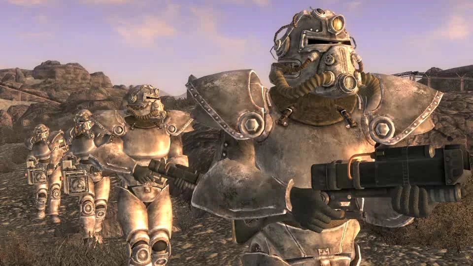
柔軟に適応して進化することを拒否し続けたことで、新カリフォルニア共和国（NCR）がウェイストランドの主要な権力（最大勢力）として台頭したため、ブラザーフッドの地位と影響力は完全に相対的に急降下しました。
何ら対応計画もないままに時代遅れになったウェイストランドに直面したことで、ブラザーフッドの原理に対するますます狂気的なほどの厳格な遵守（固執）はただの「宗教的な教条主義」へと進化し、この精神構造が彼らの指導層を完全に支配しました。
『コーデックス』は絶対的な聖典となり、ロジャー・マクソンは事実上「神格化」されました。彼らの日常の言葉遣いにも完全な宗教的影響が浸透し、「By Steel（鋼に誓って／鋼にかけて）」という言葉は、顔のない上位の神への祈りと誓いを呼び起こすための定型文となりました。
パラディンA：「ベロニカがエルダーと話しているのを聞いた。『我々は決してこれを許さない』」
運び屋：「何を許さないって？ 彼女はエルダーの決定を尊重するつもりだぞ」
パラディンA：「尊重だと？ 笑わせるな。あの女はエルダーの耳元で囁き、我等の『コーデックス（最高法典）』の記述を毒しようと企んでいるのだ。
いいや……ここで終わらせなければならないのだ。“処刑”しろ」
運び屋：「一体何がそんなに大問題なんだ？」
パラディンA：「ハイ・エルダー・マクソンはただ教団を創設しただけではない。彼がブラザーフッドを定義したのだ。ブラザーフッドに奉仕するということは、彼の『理想』に奉仕することだ。我等の生き方はそれに基づいている。我等はそれ以外の道を知らないし、それ以外の道など存在しないのだ。
あのふざけた考えを持った女は、我等のランクに奉仕するすべての騎士、パラディン、そしてスクライブの顔に唾を吐いているのだ！！」
彼らが対象とするテクノロジーの定義も非常に「選ばれたもの」になりました。
ブラザーフッドは、エネルギー兵器や力・恐怖の象徴であるパワーアーマーといった『戦闘技術』にほぼ排他的に焦点を当てるようになり、その使用を自分たちの地位を高めるためだけに狂信的に制限しました。
その一方で、農作物の遺伝子組み換えや土木工学といった基本的な「人類の復興に有益なテクノロジー」については、彼らの狭く教条主義的な“力”の追求とは無関係であるとして、ほぼ完全に無視されたのです。
さらにより酷いことに、「より大きな目的（人類の平和）」のためであっても、ブラザーフッドのテクノロジーを外部組織（ガンランナーやFollowers of the Apocalypseなど）に少しでも共有しようものなら、それは即時処刑に値する「反逆罪（Treason）」と見なされるようになりました。
ベロニカ：「うそ……ああ……なんてこと……やめて……嫌ぁっ！！」
パラディンA：「外部組織と知識を共有するだと。やはりお前は信用できない女だったな。お前の動きは遠くから追跡させてもらったが、現行犯で取り押さえられたのは収穫だったな。
ブラザーフッドの機密を外部の人間に渡すことは『最も卑劣な反逆行為』だ。
さあ、言い残すことはあるか？」
（※ベロニカが所属するモハビ支部のパラディンたちが、彼女に恩がある罪のない「アポカリプスの使徒」の医療スタッフたちを単発的な狂信により皆殺しにした直後の会話）
初期の「テクノロジーの暴走から人々を保護する」という純粋な衝動は、もはや醜い「隠匿（Hoarding）」に置き換えられました。ブラザーフッドはテクノロジーを独占・管理する努力において極端に攻撃的になりました。部外者が彼らの列に加わることは絶対に許可されませんでした。
地球の環境や未来を回復すること自体を放棄し、ブラザーフッドは他のライバル（NCRなどの外部の文明人たち）が死滅した後に、地球の上に君臨し唯一生き延びて支配することを望んだのです。
コーデックスそのものすら、この歪んだ世界観を強調するために、彼らの手によって何度も書き直されたり再解釈されたりしていました。
運び屋：「ブラザーフッドは、レイダーや他の脅威から一般の人々を守ってくれるのか？」
ベロニカ：「いいや、全く。私たちは『彼ら自身から』人々を保護するだけ。それも、彼らに絶対に本当に優れた戦前のオモチャを渡さないという意味でのみね。そして、時々それは『あいつら』から『私たち自身』を守り、彼らより長く生きて『人類の唯一の相続人（支配者）』になることを期待するようなものよ。
これまでにも組織の方針に背いて、普通の人々を純粋に助け始めた分派もいたわ。ある支部ではそれで小さな内戦（Civil war）さえ起こったの。ウチらの長老たちは、自分たちの『孤立主義』をそれほどまでに真剣に受け止めているのよ」
放浪者：「落ち着け、小指（※Squireの階級）。俺は噛みついたりはしない」
アーサー・マクソン：「私の無礼な振る舞いがあなたの気に障ったなら申し訳ありません。シタデル（要塞）には訪問者がほとんど来ないものでして。
エルダー・リヨンズや他のブラザーたちは素晴らしい教師ですが、私はどうも（部外者との）プロトコルについて緊張してしまって……。
『コーデックス』には、部外者を決して信じてはならないと書かれています。鋼で結ばれていない者から身を守れ、彼らはひどく盲目なのだから。可能であれば彼らを助けよ、だが決して自分自身を見失うなと。そう記されています」
とはいえ、ブラザーフッドの全ての支部がこの「反動的」な方針に完全に従っていたわけではありませんでした。
とりわけ異端であったキャピタル・ウェイストランドのエルダー・オーウェン・リヨンズの連邦ブラザーフッド（※FO3）は、2276年に自身の支部を純粋な「ボランティア（慈善組織）」へと転換し、見返りを求めずにウェイストランド人を助け、外部の徴兵に道を開いたことで、本部やコーデックスから完全に逸脱しました。
公平な交換条件ではなく「完全な慈善（ただの善意で人員と弾薬を消費し続けること）」を組織に狂信的に主張したため、支部はスーパーミュータントとの終わりなき絶望的な持久戦によってキャピタル・ウェイストランドにおいて20年間に及ぶ絶え間ない衰退と領土の縮小を引き起こしました。
最終的にエンクレイヴの残党とのピューリファイアーを巡る大戦（Battle of Project Purity）により、新たなテクノロジーと水資源の流入がもたらされましたが、リヨンズの極端な「人道特化」のリーダーシップ下にある根本的な問題は残ったままでした。
そして何よりも致命的だったのは、ロスト・ヒルズの西海岸本部が、マクソン一族の指令から外れて勝手にボランティア軍団と化したリヨンズの支部に対して腹を立て、数年間にわたり「西海岸本部への通信を完全に遮断し、あらゆる援軍と物資の派遣を拒否・無視し続けていた」という冷徹な事実でした。
彼らは西海岸本部に見捨てられた、孤立無援のボランティア軍団だったのです。
復権派 (Restorers / Fallout 4)
（メイン記事：Brotherhood of Steel (Fallout 3)）
我々は、そんな悲劇が二度と起きないよう確実にするためにここにいる」
— パラディン・ダンス（2287年）
2280年代、エルダー・アーサー・マクソンの下で大きなイデオロギーの改革が導入されました。かつての22世紀の創生期のブラザーフッドと同様に、東海岸の（連邦）支部は自らを『人類の進歩』に再び捧げました。
ブラザーフッドは、ウェイストランドの政治において積極的（武力的）な役割を果たすだけでなく、かつての「伝統主義者」のルーツと、エルダー・リヨンズの「アボミネーション（忌まわしき存在）を根絶する」という方針の双方を融合させ、さらにテクノロジーを管理・統制するための新たなアプローチを組み込んだのです。
人間の科学的な干渉によってもたらされたアボミネーションは、人類が繁栄するために破壊・根絶されなければならない『災い（Scourge）』と見なされています。このリストには通常、スーパーミュータントやフェラル・グールが含まれますが、ブラザーフッドはもちろんレイダーなどの人類の脅威も「当然のこととして」排除します。
さらに、彼らにとってテクノロジーの『管理』は「目的を達成するための手段」であると見なされています。
崩壊しつつあった西海岸のブラザーフッドは、自らの破滅と絶滅を避けるための手段としてテクノロジーを管理しようと隠匿・孤立化していましたが、マクソンのブラザーフッドは『封じ込め』という作設当初の「本来の使命（Original mission）」に立ち返りました。完全に制御することができず、その結果人々の長期的な福祉や生存さえも脅かすような危険な技術（兵器）から、純粋に人類を保護することです。
その結果、ブラザーフッドはテクノロジーの「本質」とその力、人間にとっての意味を理解しようと努め、その力を自らの目的のために乱用し「その過程で人類を危険にさらす者たち（インスティチュートなど）」と全力で戦います。
このイデオロギーに基づき、ブラザーフッドは「テクノロジーのためのテクノロジーの発展」を強烈に拒絶し、大戦争の教訓から物事を導き出しています。テクノロジーの進歩が『人間の自制心』と『道徳的進歩』の限界をはるかに上回った結果として、核の炎が世界を焼き尽くしたと信じているからです。
戦前のメガコーポレーション（巨大企業）が自らの利益のために新技術を悪用し、社会や環境への巻き添え被害を無視して現金を懐に入れた「大量消費主義と貪欲さ」。これらは大戦争を招いた最大の原因です。

これらの理想から、人間と区別がつかない極めて高度なロボット「第3世代（Gen 3）シンス」は、科学が暴走した完璧な例であり——人間によって完全に制御することができないため——非常に危険なテクノロジーであると見なされています。
彼らはシンスの「優れた身体能力」と「自律的に思考する能力の組み合わせ」を、人類への『実存的な脅威（Existential threat）』であると本能的に危険視しています。研究所で組み立てられ、ロボットのようにプログラムされるその造られ方・過程そのものが「人間の生命は神聖である」と考えるブラザーフッドにとって、絶対に相容れない極秘の領域だからです。
このようにマクソンのイデオロギーの熱弁には深い「宗教的・思想的な響き」がありますが、エルダー・マクソン本人は、部下たちから「神」として崇拝されることを嫌悪・拒絶しています。
西海岸のブラザーフッドにはびこっていた「マクソン・カルト（マクソン一族を神格化する狂信者）」の根絶は、あくまで「テクノロジーによって補助・完成されながらも、テクノロジーそのものに支配されたり奴隷にされたりしない『ただの人間』でありたい」というマクソン本人の確固たる願望と一致しています。
国家建設者 (Nation builders / TVドラマ版)
— ハイ・エルダー・ロジャー・マクソン
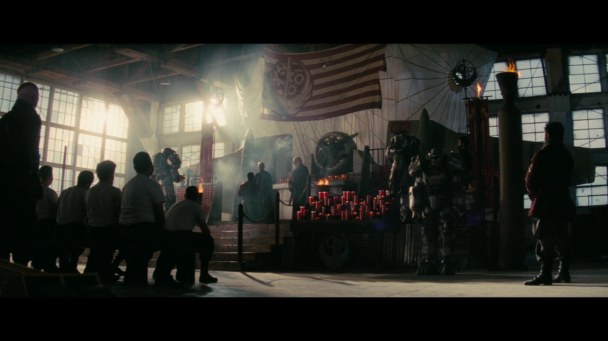
エルダー・マクソンの改革は、西海岸全体にも広範な影響を及ぼしました。ブラザーフッドはついに、東海岸ではすでに当たり前となっていた「国家（Country）」としての役割を受け入れ、イニシエイトたちは単なる騎士団のためではなく『国家（ブラザーフッド）』の名の下に戦い、命を捧げるようになりました。
また、西部では「クレリック（聖職者）」という新たな階級（カースト）が出現し、ブラザーフッドの使命に強固な「宗教的意味合い」を吹き込んだことも、ブラザーフッドの進化に大きく貢献しました。
パワーアーマーに身を包んだ少数のエリート的な『戦う修道士たち』から、少数のパワーアーマー兵と「それに随行する圧倒的な数の志願兵（アスピラント）や新兵（イニシエイト）」の物量に頼る『巨大な大衆運動（Mass movement）』へと姿を変え、彼らはどんなに巨大な敵（NCRなど）をも乗り越えられるようになりました。
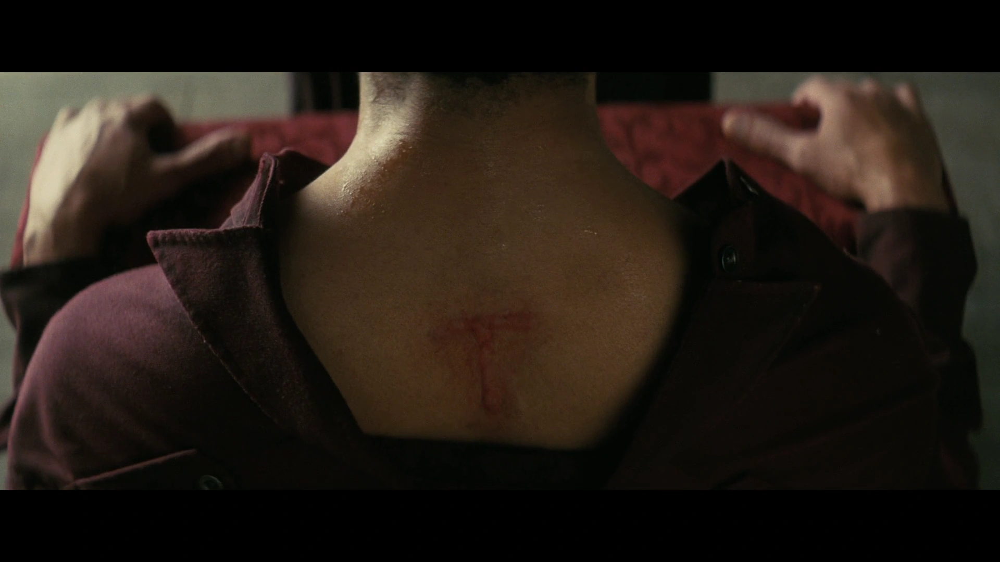
これは、「シェイディ・サンズの崩壊」の直後に見られた「新カリフォルニア共和国（NCR）」の軍国主義的な慣行を模倣したものであり、エルダー・オーウェン・リヨンズやアーサー・マクソンが以前に実践していた「大規模な外部部外者の採用（Mass outside recruitment）」の導入をもたらしました。
そして、この新しいイデオロギーの解釈と圧倒的な頭数の増加の「産物（代償）」として、アスピラント（志願兵）やスクワイア（従者）たちは、より「消耗品（Expendable）」としての扱いを受け前線での激戦に投入されるようになりました。教団のために「死ぬ」ことは教団員の基本的な義務でしたが、彼らが大量補充可能なコマへと使い捨てられていくこの変化は顕著です。
また、従者（TitusとMaximusなど）の肌に『焼印』を押すといった儀式なども生み出されました。従者たちは実際にこの儀式を楽しみにしており、自分の肉体に『騎士の刻印』が刻まれるまでは本当の従者になれないと思い込んでいます。
象徴と紋章 (Iconography)
ブラザーフッド・オブ・スティールのイコノグラフィー（象徴的表現）は、「歯車（Gears）」「剣（Sword）」、そして「翼（Wings）」のエンブレムを中心に構築されています。彼らはこの紋章を施設を飾るためや、アーマー・装備品の識別表示（タグ）、さらに自分たちの領土の境界を特定する旗やマーカーの一部として広く使用しています。
ブラザーフッドの記章は何年にもわたって進化および細かい派生を繰り返しており、基本的な配色はほぼ変わっていませんが、歯車の数や向きは支部によって様々です。
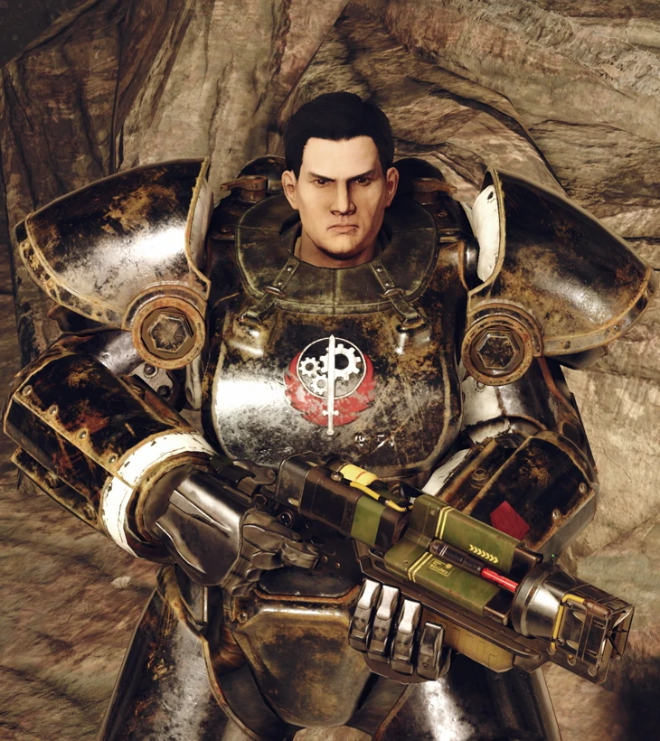
この記章が、「戦前の軍服」と「ブラザーフッドの服」の「唯一の大きな違い」であることがよくあります。
西海岸のブラザーフッド（およびFOVのリヨンズ支部）の兵士たちは、戦闘のオンオフを問わず「リコンアーマー（Recon armor）」を日常着として愛用し、スクライブやエルダーは戦後に作られた伝統的な「ローブ」を身にまといます。一方、東海岸のスクライブ（およびフォールアウト76の初期アパラチア支部）は、多数のポーチが付いたレザーベストを重ね着した「エンジニア向きのコート（Engineer's uniform）」を着用し、さらに各自の目的に合った機能的な追加装備を用いることを好みます。
特定の支部は日常的にコンバットアーマーを使用することもありますが、やはりブラザーフッドと言えばその「強力なパワーアーマーの重使用」で最もよく知られています。
支部と拠点 (Divisions and locations)
| 支部名 (Chapter) | 構成・主要拠点 (Locations) | 登場作品 |
|---|---|---|
| ロスト・ヒルズ本部 (New California) |
・ロスト・ヒルズ (Lost Hills) ・サンフランシスコBOS前哨基地 ・デン空き家前哨基地 ・NCR BOS前哨基地 (シェイディ・サンズ) |
Fallout 1 Fallout 2 |
| キャピタル・ウェイストランド (Lyons' / Outcasts) |
・シタデル (The Citadel) ・アダムス空軍基地 ・GNRプラザ ・ジェファーソン記念館 ・インディペンデンス砦 (アウトキャスト) |
Fallout 3 Fallout 4 (言及) |
| モハビ支部 (Mojave / Circle of Steel) |
・ヒドゥンバレー (Hidden Valley) ・B.o.s.隠れ家 (Safehouse) ・ヘリオス・ワン (元拠点) ・バンカー13 (元拠点) |
Fallout: New Vegas |
| 連邦・コモンウェルス支部 (Commonwealth) |
・プリドゥエン (The Prydwen) ・ボストン空港 ・ケンブリッジ警察署 ・センチネルサイト/フォートストロング等 |
Fallout 4 TVドラマ (言及) |
| アパラチア支部 (Appalachian) |
・ディファイアンス砦 (Fort Defiance) ・キャンプ・ベンチャー ・ドロップサイトV9 / ワトガ等 |
Fallout 76 |
| 第一遠征軍 (First Expeditionary Force) |
・アトラス砦 (Fort Atlas) ・ホワイトスプリング・リゾート ・メタルドーム / 前線基地タンゴ等 |
Fallout 76 |
| サンフェルナンドの騎士団 (Knights of San Fernando) |
・B.o.S.キャンプ基地 ・フィリー (Filly) ・エリア51 (Area 51) |
TVドラマ |
| グランドキャニオン支部 (Grand Canyon chapter) |
・グランドキャニオン (言及のみ) | TVドラマ |
| コロナド支部 (Coronado chapter) |
・ヨセミテ (言及のみ) | TVドラマ |
| ヨセミテ支部 (Yosemite chapter) |
・コロナド (言及のみ) | TVドラマ |
| シカゴ支部 (Chicago chapter) |
・シカゴ (言及のみ) | Fallout 3 (言及), 4 (言及) |
| モンタナ支部 (Montana chapter) |
・モンタナ・バンカー (言及/没) | Fallout 3 (没コンテンツ) |
| 支部名 (Chapter) | 構成・主要拠点 (Locations) | 登場作品 |
|---|---|---|
| 中西部支部 (Midwest chapter) |
・The Belt ・バンカー（Alpha～Epsilon） ・シカゴ ・Vault 0 |
Fallout Tactics |
| テキサス遠征軍 (Texas Expedition) |
・Vaultプロトタイプ ・カーボン (Carbon) ・アラモ砦 |
Brotherhood of Steel 1 & 2 |
創設支部 (Founding chapter：ロスト・ヒルズ)
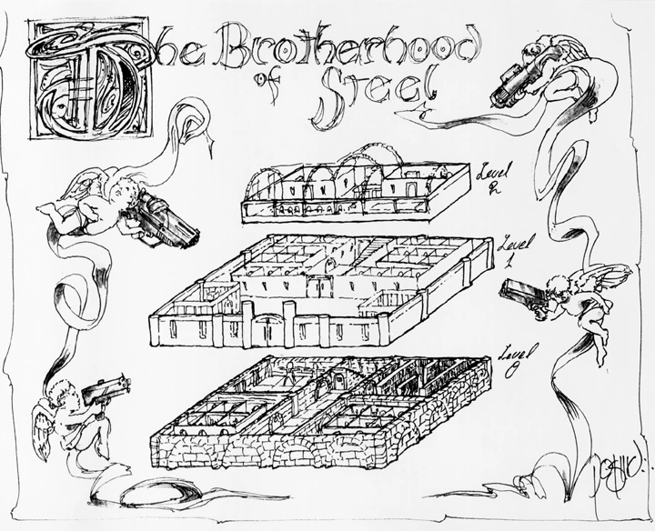
すべてのブラザーフッドの「本部」にして最初の支部は、カリフォルニアにある「ロスト・ヒルズ（Lost Hills）」の巨大な地下バンカーです。
ここは組織が設立された最も神聖な場所であり、戦後の歴史の大部分においてブラザーフッドの『ハイ・エルダー』と『最高統治評議会』が集結する権力の座です。彼らの研究と軍事活動の絶対的な中枢としても機能しています。
2240年代までに、ニューカリフォルニアに点在する複数の小規模な監視バンカー（デン、サンフランシスコ、シェイディ・サンズなど）を確立していましたが、カリフォルニアから遠く離れ、本部との連絡が絶たれて独立して行動する支部であっても、少なくとも公式には「すべてのブラザーフッドの前哨基地はロスト・ヒルズの統治評議会の権限に従属する」とされています。
ロスト・ヒルズ本部バンカー自体は、NCRの『マクソン州（マクソン将軍にちなんで名付けられたNCRの州）』に完全に囲まれており、ここは公式にはブラザーフッドの支配下ではなくNCRの領土（州内）に位置しています。この地理的要因による技術対立は免れず、NCR-ブラザーフッド戦争により、2281年までにニューカリフォルニア全域で少なくとも「6つ以上」のブラザーフッド拠点がNCR軍によって破壊または水没させられました。
しかし、23世紀後半のロスト・ヒルズ本部の正確なステータス（生存状況）は不明のままです。
2296年までに、シェイディ・サンズの核崩壊とNCRの解体に続き、独自の長老（エルダー・クレリック・クイントス等）を持つ複数のブラザーフッド別支部が独自にニューカリフォルニア西海岸で活動しているのが目撃されています。
そして同時に、東海岸の「連邦（Commonwealth）支部」がブラザーフッド内における最も強大な力（The dominant power）へと成長し、実質的に西海岸の失脚したすべての既知の支部に対する「指揮権」を握るようになりました。
各支部の詳細 (Branches Details)
アパラチア支部 (Appalachia / Fallout 76)
アパラチアのブラザーフッド・オブ・スティールは、大戦争の直後、ロジャー・マクソンが衛星通信を通じてエリザベス・タガーディ中尉と連絡を取った際に設立されました。
この偶然の出会いにより、遠く離れたアパラチアの地に、人類滅亡よりもはるかに早くブラザーフッドの最初の「分岐（支部）」が確立されることになりました。キャンプ・ベンチャーと後のディファイアンス砦（Fort Defiance）を拠点とし、初期の数年間は地元住民の人命救助と援助に焦点を当てていましたが、やがてアパラチア特有の「スコーチビースト」と「スコーチ病」が人類に対する実存的な絶滅の危機（Existential threat）であると判断し、すべての努力をその破壊に振り向けました。
しかし、この初代アパラチア支部は脅威を封じ込めることに失敗し、創設から20年も経たない2095年8月に「最終決戦」で全軍が壊滅・全滅し、その歴史に一度幕を下ろしました。
しかし2103年、ロスト・ヒルズ本部から長旅を経て『第一遠征軍（First Expeditionary Force）』がアパラチアに到着し、アトラス砦（Fort Atlas）に拠点を構え、この地域での教団の存在を再確立しました。こうして彼らはアパラチア支部の「第2のイテレーション（再結成）」となりました。
だが、新しい司令官であるパラディン・ラハマニと、その部下であるナイト・シンの間には「孤立主義」をめぐる確執がすぐに生じました。シンは周囲のウェイストランド人の安全を犠牲にしてでもブラザーフッドの厳格な伝統を守ろうと固執し、ラハマニはより『団結したウェイストランド』をもたらすためにブラザーフッドの教義を破棄しようとするなど、真っ向から対立しました。
モハビ支部 (Mojave / Fallout: New Vegas)
— Fallout: New Vegas ローディングスクリーンより
モハビ支部の拠点は、モハビ・ウェイストランドのグッドスプリングス集落の真東にある「ヒドゥンバレー（Hidden Valley）」に位置しています。
このバンカーは、ハイテクな防衛システムとして機能する強力な地下ファンに囲まれており、周囲に人工の砂嵐を発生させることで、内部の居住者が秘密裏にバンカーを出入りできるようになっています。また、この砂嵐は外部のあらゆる派閥の「ターゲティングセンサー」に対する電子妨害（ジャミング）としても機能し、バンカーの存在の探知を完全に無効化しています。
2276年以前、モハビのブラザーフッドはヘリオス・ワン（HELIOS One）において新カリフォルニア共和国（NCR）軍に壊滅的な敗北を喫しました。
彼らはその地域全体への影響力を完全に失い、新たなリーダーであるエルダー・マクナマラの命令のもと、地下のバンカーに引きこもることを余儀なくされました。残された数少ない兵士たちを保護するためにマクナマラは『完全なロックダウン』を命じたため、現在この支部は、バンカーの外に取り残された調査チームからの情報と、バンカー内に閉じ込められた人々に食料や生活物資を持ち帰ってくれる「信頼できる数名の潜入工作員（ベロニカなど）」にのみ完全に依存して生き延びています。
東海岸のブラザーフッド (East Coast / Fallout 3)

米国東部に到達したパラディン・オーウェン・リヨンズの部隊（のちにキャピタル・ウェイストランド支部と呼ばれる）は、ワシントンD.C.のペンタゴン（米国防総省）の廃墟とその地下を改造して強固な牙城「シタデル（The Citadel）」を確立しました。
この派閥を率いる理想主義者のエルダー・リヨンズは、長き旅路の末に教団の本来の目的である「テクノロジーの獲得と保存」を完全に放棄し、代わりにスーパーミュータントなどの脅威から『キャピタルの人間の命を守ること』を最優先課題とする決断を下しました。
リヨンズは公式にはロスト・ヒルズの評議会からブラザーフッドの一派のリーダーとして認められていたものの、彼の最優先事項の完全な変更（教義への違反）が原因で、事実上カリフォルニア本部からのあらゆる支援と連絡を打ち切られ、事実上の「独立勢力」へと成り果てました。
西海岸からの援軍が見込めなくなったため、エルダー・リヨンズはやむを得ず「現地（ウェイストランド人）での大規模な採用」を強いられました。
しかし、これらの急造の新しい徴集兵のほとんどは「過剰に熱心」か、「完全な無能・未熟」か、あるいは「その両方」であったため、これら現地メンバーの死亡率は常に『最悪』でした。エルダー・リヨンズの娘であるサラは、彼らを守るため自身の精鋭のエリート部隊である「リヨンズ・プライド」を指揮しました。これらの兵士たちは、ワシントンD.C.の市街地の廃墟に陣取るスーパーミュータントの絶え間ない波を食い止めることで、キャピタル・ウェイストランドの全滅をかろうじて防ぎ続けました。
一方で、テクノロジーと知識の保管という『ブラザーフッド本来の目標（Origins）』に忠実であり続けたいと考えたリヨンズの遠征軍の一部メンバーは、リヨンズが彼らにインディペンデンス砦（Fort Independence）を発掘・回収調査することを「明確に拒否（禁止）」したことで堪忍袋の緒が切れ、2276年に彼を見限って離反しました。
パラディン・ヘンリー・キャスディの指揮のもと、彼らはシタデルを去り、そのインディペンデンス砦に強引に居を構え自らを「ブラザーフッド・アウトキャスト（Brotherhood Outcasts / 除名された者たち）」と名乗りました。アウトキャストたちはリヨンズが放棄した本来の使命を遂行することに加え、西海岸の長老たちとの連絡を何としてでも再確立し、リヨンズを銃殺隊の前に立たせる（処刑させる）ことを目論んでいました。
時が経ち、スーパーミュータントとの終わりなき死闘が激化する中、数年前にニューカリフォルニアを追われて逃亡したはずのあの「エンクレイヴ（Enclave）」が肉体を持って東海岸に復活しました。
数年前からラジオ放送を通じてウェイストランド全土に聞こえていた彼らは、キャピタルのすべてにきれいな水を提供するジェファーソン記念館の切り札「プロジェクト・ピュリティ」を圧倒的な武力で押収し、その後キャピタル・ウェイストランド全体でその力を強大に再構成しました。
当初は慎重な姿勢を崩さなかったエルダー・リヨンズですが、エンクレイヴがVault 87のG.E.C.K.を手に入れ「プロジェクト・ピュリティ」を不当に起動しようとしているのを見ると方針を一転させ、エンクレイヴとの全面戦争（Full-scale battle）に突入しました。無敵の巨大兵器『リバティ・プライム（Liberty Prime）』の支援により、猛反撃を受けたエンクレイヴは記念館から叩き出され、不確実な混乱と散り散りへと追い込まれました。
作戦終了後にリバティ・プライムを破壊されるという痛手は負ったものの、リヨンズの支部は他の西海岸の支部（NCR戦争で荒廃した同胞たち）を遥かに凌ぐ軍事的再建のプロセスを歩み始めました。
サンフェルナンドの騎士団 (Knights of San Fernando / TV版)
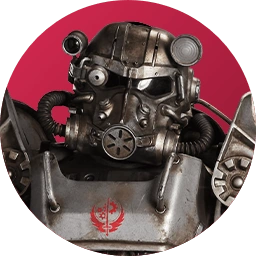
「サンフェルナンドの騎士団」は、2296年までにニューカリフォルニア地域で活動していることが確認されている新しいブラザーフッドの別支部です。
エルダー・クレリック・クイントス（Elder Cleric Quintus）に率いられたサンフェルナンドの騎士団は、組織の「半宗教的」な信念と美学を極限まで強調しており、階級内には「クレリック（聖職者）」が強い発言力を持っています。彼らの兵士たちは厳格な規律と「ブラザーフッドこそが変革（新世界）のための最も重要な力である」と教える軍事ドクトリンに従うよう徹底的に洗脳・訓練されています。
2296年における彼らの唯一の既知の拠点は、西海岸にある巨大な荒廃した「軍事飛行場（Airfield）」であり、そこでは従者（スクワイア）たちが将来のナイトの志願兵としての役割を果たすために育てられ、過酷な訓練を受けています。
2296年、サンフェルナンド支部は、同胞である「連邦（Commonwealth）支部」の最高司祭から『逃亡したエンクレイヴの科学者シギ・ウィルジグを狩り出せ』という直接の命令を受けました。NCR残党（リー・モルデイヴァーの派閥）に手によって保持されている「常温核融合（Cold fusion）」の恐るべきテクノロジー・アーティファクトを入手するという大義名分の下、支部は「フィリー（Filly）」の町を軍事占領して前哨基地とし、その後、モルデイヴァーの軍隊に対する「グリフィス天文台の戦い」に総力で参加し、ブラザーフッドが歴史的勝利を収め、ロサンゼルス全域のコントロール権を掌握することに成功しました。
その後（2296年後半）、サンフェルナンド支部は新たな活動拠点としてエリア51（Area 51）の占拠も試みました。エルダー・クイントスはそこで、グランドキャニオン支部、コロナド支部、そしてヨセミテ支部のリーダーたちを極秘の秘密会議に召集しました。
彼は常温核融合の無限の力を利用することで「巨大になりすぎた東海岸（連邦支部）」に対して反逆の刃を向け、「ウェイストランドの力の均衡を再び西海岸に戻し、自分自身がブラザーフッド全体の頂点に立つ」という野心的な計画を共有しました。
彼は他のエルダーたちを見事に説得し自らの計画に丸め込みましたが、まさにその時、連邦支部からの連絡将校である「ザンダー・ハークネス（Xander Harkness）」が到着し、状況は極度の緊張状態・複雑に陥りました。（※TVシリーズシーズン2へ繋がるプロット）
各マイナー支部 (TV版)
- グランドキャニオン支部 (Grand Canyon chapter)：
2296年現在、グランドキャニオン内のどこかに存在しています。「連邦支部」に従属しており、移動のために少なくとも1隻の「プリドゥエン級飛行船（Prydwen-class airship）」を保有しています。この年、常温核融合の遺物を利用して連邦支部に反逆しようとするサンフェルナンドの騎士団との同盟に招待され、支部のリーダーは快くこの反逆（クーデター）に同意しました。 - コロナド支部 (Coronado chapter)：
2296年現在、コロナド内のどこかに存在しています。彼らも連邦支部に従属し、同じ飛行船を保有。サンフェルナンドの反乱同盟に招待され、彼らもこれに快く同意しました。 - ヨセミテ支部 (Yosemite chapter)：
2296年現在、ヨセミテ内のどこかに存在しています。連邦支部に従属。この支部も反乱同盟に招待され、当初は同意していましたが、連邦支部から直属の連絡将校が到着した瞬間に恐れをなし、同盟から土壇場で離脱しました。
その他支部 / 分遣隊
- モンタナ支部 (Montana Chapter / Fallout 3)：
（※データ上のみの没バグ）モンタナにはブラザーフッドのバンカーが存在し、かつて「エルダー・パトロコラス」と呼ばれる長老が支配していたとされています。ゲーム内にはこの人物の名前を取り上げながら食事の祈りを捧げるエルダー・リヨンズの感動的なボイスデータが存在していますが、スクリプトのバグにより通常のゲームプレイで聞くことは不可能（Bugged）となっています。 - シカゴ分遣隊 (Chicago Chapter)：
かつて「スーパーミュータント（マスターの軍勢）の残党」を空から追跡するために、ブラザーフッドが飛行船で東に派遣した分遣隊です。彼らはシカゴに不時着し、そのまま街でミュータントと衝突しました。2277年までに、彼らは本部の命令を無視し暴走状態にある「ローグユニット（反逆者）」に分類されており、他のブラザーフッドの支部からはすでに「レーダーから消えた（連絡不能の）」状態となっています。
ただし、彼らは東へ逃れたミュータント軍の残骸を倒すことには成功しました。そして特筆すべきことに、このシカゴ分遣隊は敵対したミュータントを皆殺しにするのではなく、降伏したミュータントたちを『ブラザーフッドの階級に組み込んで同化（Assimilation）』させており、ミュータントの教団への参加を許容している特異な支部（カノン）となっています。
専門・下部組織 (Branch organizations)
- サークル・オブ・スティール (Circle of Steel / CoS)：
ブラザーフッド・オブ・スティール内の「内部紛争」の処理に特化した影の専門ブランチ（異端審問機関）です。彼らはブラザーフッド全体に対する脅威や、教団を裏切った反逆者（エライジャなど）の暗殺や内部処理を容赦なく行います。 - リヨンズ・プライド (Lyons' Pride)：
リヨンズのキャピタル支部に属する戦術部隊で、センチネル・サラ・リヨンズが率いる、ブラザーフッド最強のエリート兵士たちで構成された少数精鋭部隊です。
非正史（Non-canonical）の支部
中西部ブラザーフッド (Midwestern Brotherhood / Fallout Tactics)
2197年に（前述のシカゴ分遣隊の）創設者たちの飛行船がシカゴ近郊で不時着した際、カリフォルニアのロスト・ヒルズの指導部との連絡を断たれ、完全に「独立した派閥（Splinter faction）」と成り果てた組織です（※Tactics独自の設定）。
本来の孤立主義的なブラザーフッドとは異なり、中西部ブラザーフッドは「極めて攻撃的に拡大」し続け、最終的に『イリノイ州からカンザス州に至るバンカーと従属する町のネットワーク』を構築・確立しました。
彼らはブラザーフッドの保護下にある部族や都市の人々を無理やり自分たちの「軍」に徴兵しました。
外部の世界に対して非常に積極的で開かれていますが、この派閥は決して利他的なわけではありません。ブラザーフッドの支配下にある村民はレイダーやミュータントから保護されていますが、その代わり悪名高い「教団の異端審問官（インクイジター）」の恐怖に怯えて暮らさなければなりません。
西海岸のものと比較して採用に関して遥かにオープンであり、なんと『グール、スーパーミュータント、そして知的デスクロー（Intelligent deathclaws）』までも教団の階級へ加えることを許可しました。
彼らの主な基地は、戦前の軍事シェルターを発見し接収したもので、ブラザーフッドの軍事的ルーツに敬意を表して「アルファ」「ベータ」「ガンマ」「デルタ」「イプシロン」と名付けられていました。
（※これらはFallout Tacticsに登場するため公式設定ではありませんが、これらを下敷きにした「シカゴ分遣隊（ミュータントを取り込む集団）」として正規シリーズでも言及されています）。
テキサス遠征軍 (Texas Expedition / Fallout: Brotherhood of Steel)
（※コンソール外伝ゲーム『Fallout: Brotherhood of Steel』の非公式設定）
大長老ジョン・マクソンの死後、ブラザーフッドのパラディンたちの長であった『ロンバス（Rhombus）』が新たなハイ・エルダーの座に就きました。アティス（Attis）というミュータントに率いられた派閥が東へ移動し、テキサスの巨大金庫（Corporate Vault）を使ってミュータントの軍隊を再建しようと企てていたため、ロンバスは西海岸評議会の一部の批判を無視し、2208年にこのアティス率いる巨大な脅威に対する『十字軍（Crusade）』を開始しました。
テキサスのブラザーフッドは、グールの都市である「ロス」でアティスとその軍隊を完全に殲滅し、遠征軍は最終的にテキサスのフォート・ワースやアラモの地までその勢力を拡大することに成功しました。
（※シカゴ分遣隊とは異なり、このテキサス支部やロンバスのテキサス十字軍の出来事は後続のカノン作品では一切言及されていません）。
他勢力との関係 (Foreign relations)
眼下に住むすべての男、女、子供たちに致命的な危険が迫っている。もし俺たちが失敗すれば、敵が人々を侵略し尽くすのは時間の問題だ。だからこそ、連邦を浄化することは俺たちの義務であり、勝利が確実になるなら、俺は喜んで自分の血を流すつもりだ」
— パラディン・ダンス
※貿易や所有権などの関係については、本記事の『財産と貿易（Trade）』『テクノロジーの再分配（Redistribution of technology）』『没収・徴発（Confiscations）』のセクションを参照してください。
一般の民間人 (Civilians)
だがブラザーフッド単独では、失われたものを再建することは絶対に不可能なのだ。我々には『彼ら（民間人）』の力が必要なんだ……地獄に堕ちろ、我々のあらゆる計画は、そもそも『彼らのため』にあるんだぞ！」
— ハイ・エルダー・ロジャー・マクソン
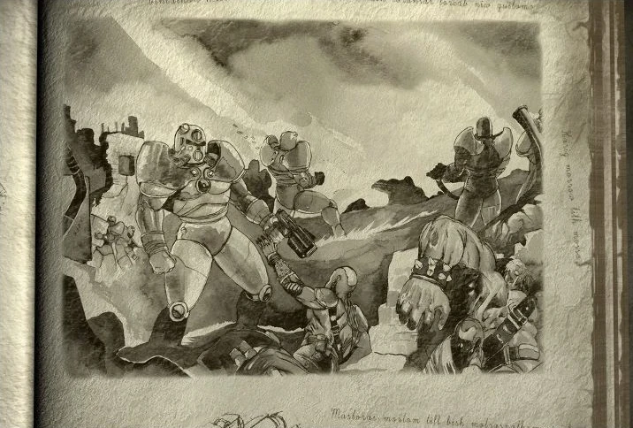
創設初期のブラザーフッドは、「大戦争（Great War）」の生存者を助けるための一種のボランティア組織として設立され、『民間人の防衛』に直接関与することを彼らの「最優先事項」としていました。しかし、前述の通り2082年以降、組織の優先事項が人類と地球の未来を守るための「テクノロジーの収集と保存」へと少しずつシフトしたため、直接的な人助けは後回しにされるようになりました。
それでもなお、ブラザーフッドの初期の数年間は、ほとんどの支部の根本的な目標に『人の命を救うこと』がまだ色濃く残っていました。テクノロジー保護が組織の主な優先事項となった後も、彼らは組織の使命や価値観を損なわない限り、可能なときに民間人を支援するという使命を持ち続けていました。
コーデックスには次のように記されています。
『鋼で結ばれていない者から身を守れ。彼らは盲目だからだ。だが、可能な時はいつでも彼らを助けよ。そして、決して自分自身を見失ってはならない』
各時代での市民への対応
アウトサイダー（部外者）に対する組織の警戒心が高まり続ける中でも、彼らは東海岸と西海岸の双方で公然と市民への支援を続けました。
- フォールアウト76時代（2095年/2103年）：
アパラチア支部は、2095年にスコーチ病の脅威からウェストバージニアとその周辺の住民を守るために「支部ごと玉砕（自己犠牲）」という悲壮の決断を選びました。また、2103年にも第一遠征軍が中西部のレイダーによる大虐殺計画から市民の村を救うため、自らの命を懸けて共闘するなどの支援を行っています。 - フォールアウト1時代（2161年）：
より孤立主義的な政策を採用し、民間人の採用を完全にやめた2161年に入っても、ブラザーフッドは深刻な脅威に対してウェイストランド人を援助し続けました。「ユニティの危機」の際、彼らはマスター率いるミュータント軍を打ち破るのを手助けすることで居住地の全滅を救っています。その後、時間をかけてウェイストランドに厳選した技術をゆっくりと再導入し、安全な戦後技術の主要な「配給者」となりました。 - エンクレイヴとの全面戦争（2241年/2277年）：
2241年にエンクレイヴが出現した際、彼らの敗北を早める決定的な支援を行ったことで西海岸の市民を保護しました。東海岸でも2277年、「浄化プロジェクト（きれいな水の配給網）」の制御をめぐってエンクレイヴと全面戦争を繰り広げ、全キャピルに存在するミューテーションを持つありとあらゆる人間・動物を（Vault居住者以外まとめて）毒殺できる『改良型FEV』を水源にばらまこうとするエンクレイヴの陰謀を阻止し、大衆を大量浄化から救いました。 - フォールアウト4時代（2287年）：
2287年までに、アーサー・マクソン率いる東海岸の「連邦支部」は、インスティチュートが生み出す『シンス』やスーパーミュータントといった人工的な狂気の兵器から市民を守るために全面戦争を開始しました。
生存者：「彼ら（連邦の連中）のことを心配しているのですか？ 私はてっきり軍事侵攻の戦争の準備をしているのかと思っていましたが」
マクソン：「ブラザーフッドは『自らの手で戦争を起こす』ことによって、『彼らの世界の戦争（破滅）を未然に防ぐ』ためにここにいるのだ。
その違いは、我々の戦争は『文明を灰に還元することを目的にしていない』ということだ」
ブラザーフッドの兵士たちは「罪のない人々を守ること」を自分たちの名誉の源と見なしており、民間人を守るためなら進んで血を流し、命を捧げます。
そして、組織が「一般のウェイストランド民の世俗的な問題に干渉すること」にしばしば躊躇するのは、彼らが邪悪で他人を見下しているからではなく、状況の深刻さによってはそれが『戦術的に最悪の選択』になる可能性があるためです。組織の根本的な「長期の使命」は大多数のメンバーにとって最も重要な関心事であり、民間人を助けることでその長期的な目標が妨げられ、結果的に数千倍の命が失われる可能性がある場合、彼らは「民間人の嘆願を無視するという冷酷な決断」を下すことができます。
ブラザーフッドは、自分たちの集団が一般のウェイストランド民が個人的な利益のために利用するような『ただの慈善団体』だとは全く考えていません。
彼らのこの冷酷な面は「民間人はミューテーションやレイダーなどに対して容赦なく殺処分できる」という事実に一部起因しています。彼らは正当な理由もなく民間人に敵対することはありませんが、『総力戦』となった場合、スーパーミュータントだろうと「レールロード」だろうと民間人（インスティチュート内部の非戦闘員・研究者たち）であろうと『捕虜』をとることはしません。なぜなら、彼らは目の前にある無数の脅威を「無期限（永久）に無力化する」ことだけを目的としているからです。
組織は不必要な民間人の犠牲を可能な限り防ごうと努めますが、いくらそれが現場の兵士にとって不愉快な事態であろうとも、「巻き添え被害（Collateral damage）は確実に発生するし、また発生しなければならない」という非道な現実のファクトを受け入れています。
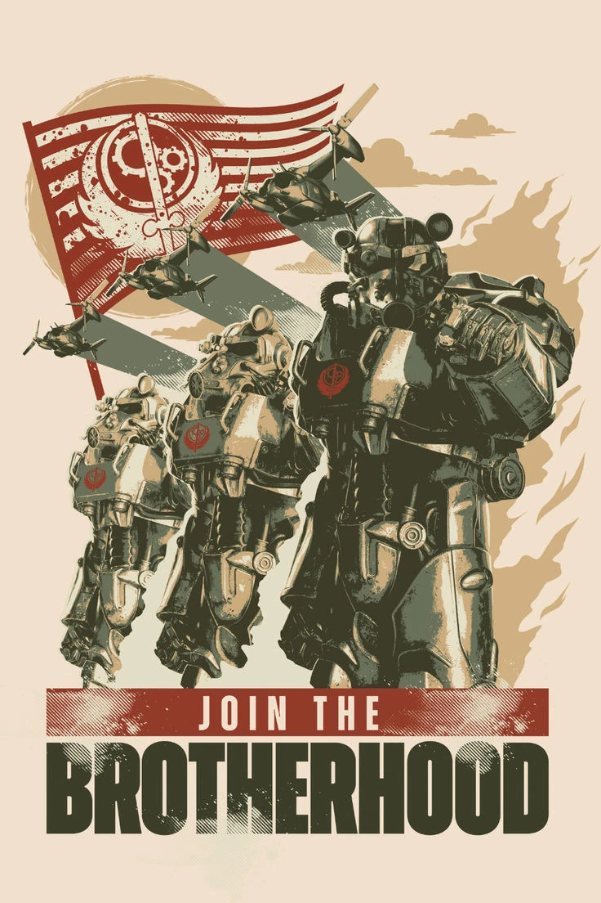
外部からの採用 (Outside recruitment)
なぜなら、今は我等への奉仕を通じてその目が開かれているかもしれないが、彼らはいずれ盲目になるのだから」
— ブラザーフッド・コーデックスの一節
教団の創設時および初期の数年間、ブラザーフッド・オブ・スティールは軍人だけでなく、あらゆる階層の人間（科学者、初期の救急隊員、一般のウェイストランド人など）から採用を行いました。
彼らは西海岸で成長を続け、マリポサ近郊に駐留していた州兵の部隊などもその列に迎え入れました。ブラザーフッドの新兵向けの基礎訓練は「米陸軍レンジャーの訓練プログラム」を徹底的に改造して新しい「基礎軍事基準」としたもので、かつての退役軍人でさえ過去の訓練よりもはるかに困難で過酷だと感じるものでした（その一環として、実弾飛び交う本物のスーパーミュータントやレイダーとの交戦が『基本訓練（ベーシック）』に組み込まれていたほどです）。
民間人を優秀な兵士へと鍛え上げるには、訓練中の新兵の一定の死は「必要な犠牲（Loss）」であると見なされていました。
ロジャー・マクソンの死後、ブラザーフッドは「極端な孤立主義」へと傾きました。
2141年以降、この組織は部外者の採用をほぼ完全に打ち切りました。2241年までに西海岸では完全に孤立し、外界のほとんどからその存在を隠蔽していました。この時期、ブラザーフッドは一般原則として一切の部外者を採用しませんでした。もし例外として採用する場合は、『大人』はすでにテクノロジーに対する「歪んだ邪悪なアプローチ（考え方）」が定着してしまっているという理由から、その考えを教団の教義で一から上書き・再構築できる、年齢が一桁のような『極めて若い子供』であることが絶対の条件でした。
運び屋：「どうすればブラザーフッドに入隊できるんだ？」
ラモス：「入隊なんてできん。絶対にだ。考えすらするな。仮にウチらが不法侵入者を採用する方針だったとしても、お前はウチらにとって『歳をとりすぎている（純粋じゃない）』。
お前のテクノロジーとの関係や思想は、すでに外の毒で捻じ曲げられて腐ってしまっているからだ」
ブラザーフッドはその歴史を通じて、難民や子供たちに「アサイラム（保護施設）」を提供することで知られていますが、結局のところ彼らの多くは成長した後にブラザーフッドの前線兵士（歩兵）として身を捧げることを強要される人生を歩むことになり、これが一種の緩烈なリクルートとして機能していました。
放浪者：「（あの巨大ミュータント地帯であるピットから）どうやって脱出したんだい？」
コディアック：「あの鋼の男たちが怒涛の勢いでピットを一掃した時、ブラザーフッドは、見つけられる限りの『ミュータント化していない子供たち』をごっそりと警察で保護（取り締まり）したんだ。
結局のところ、そんなに多くはいなかった。俺と、せいぜい20人くらいだ。
若ければ若いほど、ミュータント化している可能性は低かった。確かにそれは醜い仕事だったが、間違いなくやらなきゃならないことだったのさ。俺は、あの夜明けにブラザーフッド・オブ・スティールが山の胸腹部を突破して進軍してきた光景を一生忘れないだろう」
しかし、2255年以降、エルダー・リヨンズの率いるキャピタル支部は、リベット・シティなどの地元集落から公然と「外部採用（ウェイストランド人の歩兵化）」を開始しました。ダンスやカトラーなどはこの採用ドライブ中に集められた兵士です。
また、2287年のアーサー・マクソンの時代には、彼ら「現地採用された兵士の実力」が正当に評価されるようになり、正式な階級を持ったメンバーが「スポンサー（保証人）」となり、入隊志願者を連れて歩き教えることで、教団が大量の部外者を正式な戦力として取り込むことを許可する画期的な方針転換が行われました。
2290年代（TV版時代）までには、シェイディ・サンズの没落から排出された難民を大量に受け入れることで、西海岸で活動する支部陣営までもが東海岸と全く同じ「大規模な外部採用ポリシー」を採用するようになり、彼らに食料や教育を与えて忠実な生身の砲弾（大量のスクワイアやアスピラント）に仕立て上げました。
ただし、これらの新兵や難民が教団から「去る（脱走する）」ことは、外部へ機密が漏れるというセキュリティ・リスクの観点から完全に禁じられています。
対：レイダー (Raiders)
だからこそ、我々はあきらめて「仲良くやる」ことなどできない」
— ナイト・シン
レイダーたちは常にブラザーフッド・オブ・スティールの「天敵（Natural enemy）」と見なされており、両グループは2世紀以上にわたって開かれた対立状態にあります。ブラザーフッドは、レイダーの実存こそが組織の「人類生存の使命」に対する『直接的な障害』であると見なしています。
そしてその結果、組織内の多くの者はこれらのレイダーのもたらす脅威に対処することが「使命の一部」であると信じており、局地的な人口や組織自身の利益を守るために、彼らを容赦なく破壊（全滅）するか、もしくは武力で制圧します。
長年にわたり、クレーターのレイダー、ブラッドイーグルス、バイパーズ、グレート・カーンズ、ブラックウォーター・バンディッツなどの強大なレイダー派閥とブラザーフッドの間で何度も大規模な紛争が発生してきました。
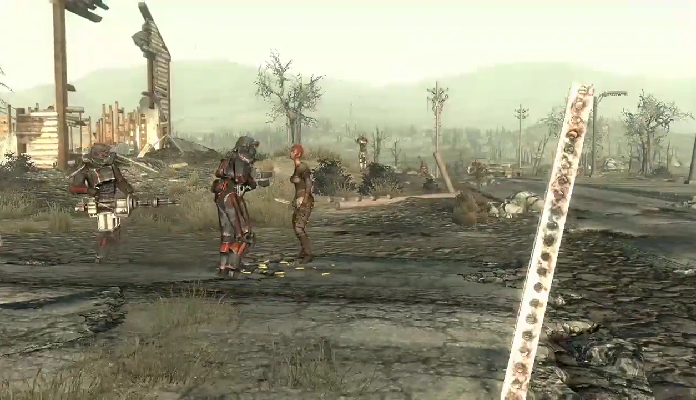
しかし、ブラザーフッドは状況によっては「一時的な同盟」や「不可侵条約」を結ぶことにもやぶさかではありません。
例えば、全面的な武力衝突を選ぶよりも有益であると判断した結果「ラスト・イーグルス（Rust Eagles）」と契約を結んだり、「Vault 96」に閉じ込められたブラッドイーグルスと一時的な協力関係を築いたりしました。
同様に、ブラザーフッドは『元レイダー』であった者たちに対して過去の罪で悪意を抱くことはなく、強固な教義に身を捧げる覚悟があるならば進んで自分たちの階級（新兵）に受け入れる方針を持っています。
また、2088年にナイト・メリッサ・ライシュ率いる分遣隊は、ビッグベンド・トンネル東側で定住を始めた元レイダー集団のリーダー（キャロル・スウィーニー）と接触しました。元レイダーであるにもかかわらず、ブラザーフッドは彼らに物資を提供し、見返りに技術的・軍事的な価値のある廃品回収物を上納させるという一種の下請け契約を結んでいます。
（※関係があるかは不明ですが、連邦のレイダーギャング『L&Lギャング』も、レールロードとインスティチュートという明確な敵対組織を持ち、「シンスを全滅させる」という唯一の目的で活動していたため、ブラザーフッドのイデオロギーと一部類似していました）。
しかし、「和解の努力」が常に報われるわけではありません。
2103年、パラディン・ラハマニは地域安定のために「クレーターのレイダー」との長期的な貿易関係を築くことに純粋な関心を示しましたが、レイダーがブラザーフッドの物資を盗み、パトロール隊に嫌がらせを行ったため、この和平の道はあっけなく崩れ去り、ブラザーフッドは武力によって自らの強奪された財産（強力なヘルストーム・ミサイルランチャーや即席のVault）を力づくで再接収しなければならなくなりました。
レイダーがブラザーフッドの強奪兵器を民間の集落「リトリート」に対し乱用した際も、ブラザーフッドは直ちに報復部隊を派遣し、ブラッド・イーグルスの「ダガー（Dagger）」を武力で脅迫して兵器を取り返したのち、その集落を自分たちの保護下に置きました。
対：傭兵グループ (Mercenary groups)
ブラザーフッドはその歴史の中で、常に「大規模な傭兵グループ」との死闘を繰り広げてきました。
これらのグループは、金銭的報酬のみを動機として、誘拐、人身売買、大量殺人などの凶悪な犯罪計画に平然と加担するため、必然的にブラザーフッド・オブ・スティールとの激烈な対立に引き込まれることになります。彼らが「高度な兵器やテクノロジーを所有（または略奪）」している場合、組織の教義にとって脅威の競争相手となるため殲滅の対象となります。
2104年、アパラチアのブラザーフッドは、非人道的なFEV実験のために無実の民間人を誘拐・殺害していたエドガー・ブラックバーンを支援していた傭兵集団『ヘルキャット・カンパニー（Hellcat Company）』の残党を、Vault 96とウェストテック研究センターへの強襲によって完全に全滅させました。
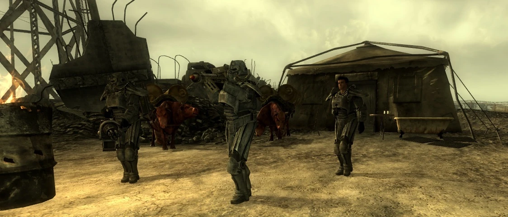
2277年、キャピタル・ウェイストランド支部は極悪非道な傭兵集団『タロン・カンパニー（Talon Company）』と血みどろの抗争に陥りました。
これは、傭兵たちがウェイストランドの貧しい集落向けへの「きれいな水（Aqua Pura）」を運んでいたブラザーフッドの給水キャラバン隊を何度も襲撃したためです。堪忍袋の緒が切れたブラザーフッドは、彼らの本拠地であるバンニスター砦（Fort Bannister）への『一斉報復包囲攻撃（Assault）』を大々的に開始しました。パラディン・ジェンセン率いるアルファ部隊は一騎当千の「孤独な放浪者（Lone Wanderer）」の支援を受けながら基地に突入、リーダーであるジャブスコ司令官を含め、視界に入るタロン・カンパニーの傭兵をすべて根絶やしにし、その後バンニスター砦をブラザーフッドの前哨基地として占領・確保しました。
連邦時代の大抗争
2287年、ブラザーフッド・オブ・スティールが「連邦（Commonwealth）」に進撃した際、彼らは『ガンナー（Gunners）』として知られる大規模な軍事傭兵グループと真っ向から衝突しました。
彼らガンナーは大量のキャップの入金さえあればどんな残酷な契約でも引き受け、その組織力で一晩のうちにミニッツメンの町を一つ「クインシーの大虐殺（Quincy Massacre）」のように火の海に沈める極悪集団でした。彼らの民間人に対する残虐性とテクノロジーへの傲慢な乱用は、ブラザーフッドにとって「直ちに根絶しなければならない目障りな敵」となりました。ブラザーフッドとガンナーとの間での銃撃戦はまたたく間に日常茶飯事となり、しばしばマスフュージョン・ビルなどを舞台として、両軍で死体を量産する激しい陣地・資源争奪戦が繰り広げられました。
対：新カリフォルニア共和国 (Relations with NCR)
（メイン記事：NCR-Brotherhood War）
2240年代の後半以前、ブラザーフッドは急速に発展する建国初期の「新カリフォルニア共和国（NCR）」と中程度に良好な関係を保っていました。
この新興国家の「州」の一つが、ブラザーフッドの創設者にちなんで『マクソン州（Maxson）』と名付けられたほどです。
2つの派閥は交易や「ある程度の技術の共有」を行っており、ブラザーフッドはNCRの首都シェイディ・サンズ（Shady Sands）のダウンタウンの内部に小規模な前哨基地を構えていたほどです。しかしこの良好な関係は、2250年代にブラザーフッドが「時代に逆行する保守的（急進的）な極端政策」を導入したことで大きく崩れ去りました。彼らは地域内での危険なハイテクノロジーへのアクセスを強制的に制限および独裁的に管理・接収しようとしたため、NCRとの間に『何十年も続く血みどろの戦争（NCR-Brotherhood War）』が勃発することになります。
過去の相違と現在の絶賛交戦中の状態（Current conflict）にもかかわらず、ブラザーフッド・オブ・スティールは、「より巨大な脅威」を打ち負かすなどの重要かつ共通の目標を達成するためであれば、敵対国であるNCRやライバルと『一時的な休戦』を結んで共闘するいとわない現実主義的な柔軟性を見せることがあります。
NCRと全面戦争中であったにもかかわらず西海岸はコントロール・ステーション・エンクレイヴ（Control station Enclave）の破壊後にエンクレイヴ残党を狩り立てるためにNCRと強力に連携したり、また、NCRとシーザー・リージョンとの巨大な大抗争（NCR-Legion War）の最盛期には、モハビの小さな支部が自らの目的とNCRの目的が「完全に相反（Crossed purposes）」しているわけではないと判断し、NCRと一時的な休戦条約に署名する意思を示しました。
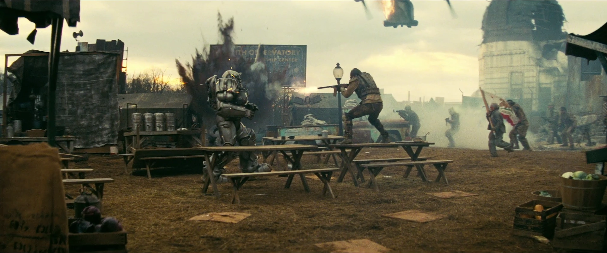
両者の外交的な妥協案がなされた場合、モハビ支部はパラディン・トッド（Paladin Todd）を代表者として派遣し、NCRのムーア大佐（Colonel Moore）と休戦の条件について交渉を行います。
ブラザーフッドの休戦条件は、NCRが過去の戦争で彼らから奪い取って勝手に使っていた「回収されたパワーアーマーの全部隊・全数の返却」を要求することでした。
これと引き換えに、モハビのブラザーフッドは「第二次フーバーダムの戦い（Second Battle of Hoover Dam）」で重装甲部隊を派遣してNCR軍に戦闘支援を提供し、さらに州間高速道路15号線とハイウェイ95号線の共同パトロールを手伝うことに同意したのです。
モハビのブラザーフッドは、西部の本国（カリフォルニア）で両国の終わらない全面内戦が絶賛継続しているにもかかわらず、この協定にサインしました。
しかし時は経ち2296年までに、シェイディ・サンズの核による崩壊（Fall of Shady Sands）があってもなお、ブラザーフッドと「NCRの残党」との間の敵対関係は続いていました。
彼らの常温核融合リアクターをめぐる捜索は『グリフィス天文台の戦い』へとクライマックスを迎え、この戦いにおいて「サンフェルナンドの騎士団」からのブラザーフッド軍がNCR軍を再び血祭りに上げ、勝利を収めました。
対：ミュータント (Attitude towards mutants)
生化学を使って遺伝子を操作しようが、回路の束から生命を創造しようが、それは科学にとって『誤った道』に他ならない。
ブラザーフッドの一員として、あらゆる形のこの醜悪な忌まわしき存在（Abominations）を絶滅させることは、我々の固く誓われた義務なのだ」
— エルダー・アーサー・マクソン
ブラザーフッドのミュータントに対する態度は、「嫌悪と軽蔑」から「全面的な敵意・抹殺行動」に至るまで多岐にわたります。
グールに関して言えば、西海岸の支部の多くはイデオロギー上の理由から彼らを極度に嫌っています。ブラザーフッドが神聖なテクノロジーを収集・保存しているにもかかわらず、「古いテクノロジーを分解・破壊する」グールたちの廃品処理・解体業の行動は忌み嫌われています。彼らの嫌悪感は、教団の聖地とも言える極東の『グロウ（The Glow）』での戦友の大規模な死とサルベージ作戦によってさらに増幅され、ほとんどのブラザーフッドのメンバーはグールを「不潔なスカベンジャー」と見なすようになりました。ありがたいことに、彼らグールと組織との接触は非常に限られています。ネクロポリス（Necropolis）やゲッコー（Gecko）などのグールの町の場所を知っているにもかかわらず、組織は歴史的に彼らに対して敵対的な軍事行動を起こしたことはありません。
東海岸でも、ブラザーフッドはグールに対して同様の態度をとっています。多くのメンバーは彼らを嫌悪していますが、同様に組織は「アンダーワールド（Underworld City）」の場所を知っているにもかかわらず、大規模な軍事作戦を実施しません。ただしワシントン記念塔に駐留しているキャピタル支部のメンバーたちは、アンダーワールドの住人を「フェラル・グールかどうかを確認するため（または単なる嫌がらせ）」に、平然とうつ伏せで彼らを標的に射撃訓練（ポットショット）を行っており、住人から心底嫌われています（皮肉なことに、これによってアンダーワールドはタロン・カンパニーから守られています）。
しかし、これらの問題にもかかわらず、組織は交渉を持ちかけてくる知性的な非フェラルグールに対しては公然と敵対行動を取ることはなく、彼らと「ビジネス」を行うことすら厭いません。
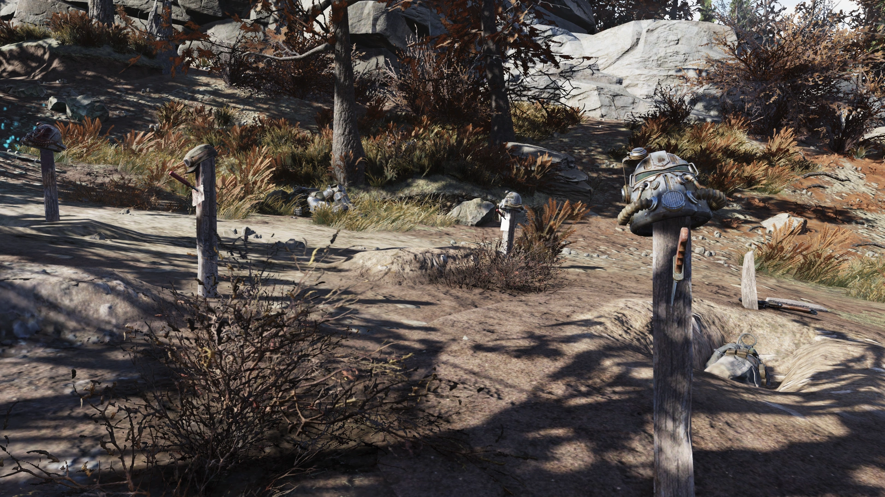
【スーパーミュータントとの終わりなき戦争】
教団とスーパーミュータントとの歴史的な敵対の原因は、西海岸の本部「ロスト・ヒルズ」の地理的側面に由来します。
バンカーが「マリポサ軍事基地」と荒涼としたセントラル・バレーに近かったため、多くの血に飢えたミュータントとの物理的衝突が連日発生しました。しかし「マスター（Master）」の大軍勢の崩壊後、ブラザーフッドは驚くほど最小限の犠牲で彼らを追い払い、この地域に「平和的に定住したスーパーミュータント」に対してはもはや敵対行動を取りませんでした。それどころか、マスター軍の元最高幹部である『マーカス（Marcus）』と、ブラザーフッドの『ナイト・ジェイコブ（Knight Jacob）』のように、数日間にわたる殺し合いの喧嘩の末に両者が親友となり、のちに異種族間平和の町である「ブロークン・ヒルズ」を共同で立ち上げ、さらにマーカス自身が親友ジェイコブの名を冠した「ジェイコブズタウン」を設立したという心温まる歴史的な例外まで存在します。
一部のブラザーフッドのメンバーはミュータントに対して「深い哀れみ」さえ感じており、その結果、哀れな彼らを「一刻も早く苦しみから解放してやる（殺してやる）」ことに努めています。例えばキャピタル支部の戦闘員コルビン大尉（Knight-Captain Colvin）は深く敬虔な信仰の持ち主であり、戦闘を「神への礼拝」とみなし、銃を「聖なる祭具」として扱います。彼は自分が殺すスーパーミュータントに対して一切の悪意を持たず、倒すたびに彼らの魂のために神に祈りを捧げています。

東海岸でブラザーフッドがスーパーミュータントと頻繁に、それも大規模に激突してきた理由の一部は、「Vault 87」や「インスティチュート」が作り出した東海岸のミュータントの種株が、西部のマスター軍のものと比べて「決定的に知性を欠き、理由なき極端な暴力性を持っているから」です。
西部のマーカスのような平和的な共存に興味がない彼らは、ひたすらに無実の集落を日常的に襲撃し、人間を食い殺し、または連れ去ってFEVで強制的にミュータント化させ続けます。当然、ブラザーフッドは人間に対するこの無限の殺戮を「人道に対する罪」とみなし、大義名分のもとにすべての東海岸のミュータントを「絶滅」させることを義務と宣言し、交渉不可の全面的な殲滅戦争を仕掛けています。
しかし、フォークス（Fawkes）やエリックソンやアンクル・レオのような「平和な特例」であると判明したミュータントにだけは例外であり、彼らが敵対行動に出ない限りは撃たれることもなく、組織も共通の目的のために喜んで彼らと協力します。
また、2276年のモハビ支部は、指導者タビサによって敵対的になる前の「ブラック・マウンテン」のミュータント（当時はマーカスが支配）と中立的・友好的な関係を維持しており、彼らを「非常に理性的」と評価していました。
2287年にも、教団の明確な命令は「すべてのアボミネーションの絶滅撃殺」でありながら、組織は現場の運用レベルでは「確実に敵対的だと確認されるまで（確認されない限りは）」発砲しないという柔軟性も持っており、ストロングやハンコック、ニック・バレンタインなどの非人間のコンパニオンを飛行船「プリドゥエン」の内部に連れ込むことすら黙認されています。
驚異のテクノロジーと兵器 (Technology)
“文明”……私は毎日、文明について考えている。リジー（タガーディ）はもうその言葉にうんざりしているだろうがね。だが、それを再建し、それを取り戻すのだ。我々の後継者たちには『過去の秘密（テクノロジー）』が必要になる。
今まで我が教団の“スクライブ（Scribes）”たちは、ナイトを守り基地を維持するための“道具”でしかなかった。
だが、それは変わらなければならない。
ブラザーフッドは単なる武装戦闘部隊以上のものとなり、我々は『文明の守護者』となるのだ。だから我々は、設計図、ホロテープ、書物、旧世界の文明構築の基礎となるありとあらゆる忌々しい記録を、手遅れになる前にかき集めなければならないのだ」
— 創設者 ロジャー・マクソン（2082年）
パワーアーマー (Power armor)
パワーアーマーの運用はブラザーフッド・オブ・スティールの象徴です。
彼らは戦前の貴重なスーツを積極的に追跡・回収し、修理して稼働状態を維持しており、「完全な新規製造」能力まで限定的ながら所有しています。在庫状況により高級機は高ランクのメンバー専用となる場合があり、他のメンバーは前線でも戦前のコンバットアーマーで我慢せざるを得ません。
ブラザーフッドはこれまでの歴史の中で、敵対する「エンクレイヴ」の未知の技術やアーマーを研究目的で幾度となく回収していますが、『鹵獲したアーマーを自軍の兵士に着せて実戦投入する（Fielding Enclave suits）』ことは意地でも絶対にしません。
- T-45d：リヨンズ率いるキャピタル支部、アウトキャスト、およびモハビ支部の一部メンバーによって最も一般的に使用されていました。
- T-51b：教団の「顔」とも言える機体。ロストヒルズ本部、アパラチア支部、第一遠征軍、およびモハビ支部によって極めて一般的に使用されています。
- T-60：連邦（コモンウェルス）へ進出したアーサー・マクソンの東海岸軍事部隊の象徴的主力機体。西海岸でも限定的に使用されています（TV版のナイト・タイタスなど）。
- ウルトラサイト・パワーアーマー：ロストヒルズとアパラチア支部によって新しく独自の設計変更が加えられた機体ですが、量産モデルが実戦配備されることはありませんでした。
- X-01：メンバーの実戦では使用されず、飛行船プリドゥエンの武器庫に厳重に保管されています。
- アドバンスド・パワーアーマー Mark II：東海岸のアウトキャストによって研究されていましたが、メンバーの間で着用・使用されることはありません。
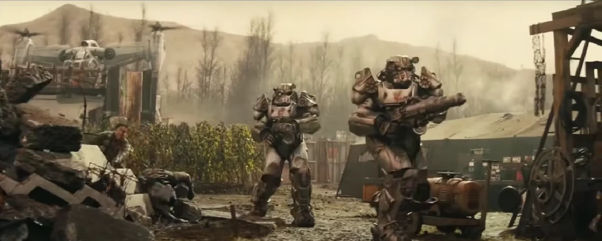
兵器と重装備 (Weapons)
軍事技術とエネルギー技術はブラザーフッドの最大の優先事項であり、何世紀にもわたる血のにじむ努力により、彼らは非常に強力で高度な兵器の数々を蓄積してきました。
これには防衛タレット、戦闘用インプラント、コンピューター、重兵器（大砲、ロケットランチャー、ヌカランチャー「ファットマン」、火炎放射器）、そしてガトリングレーザーやテスラ・キャノンといった決戦級のエネルギー兵器が含まれます。
ブラザーフッド・オブ・スティールはこれらの兵器に関する驚くべき知識を持ち合わせており、戦前の技術を維持・修理するだけでなく、「真新しい最新兵器を一から手作業で製造する能力（Manufacturing capacity）」すら持ち合わせています。
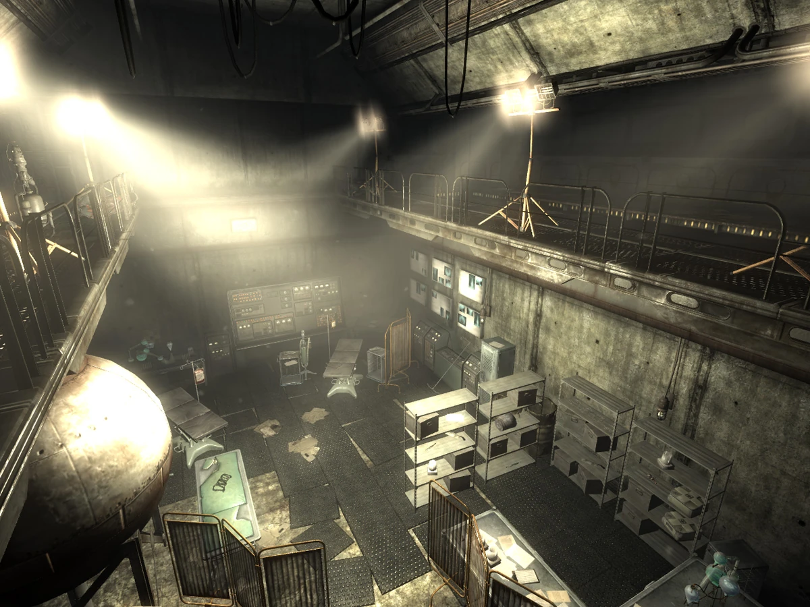
エネルギー・プラズマ技術と未知の兵器
西海岸のブラザーフッドは古くから常に「プラズマ兵器」へのアクセスを持っていましたが、アパラチアを除き、東海岸でのプラズマ兵器の調達は2270年代までは極端に限られていました。
しかし、強力なエンクレイヴとの凄惨な全面戦争によって大量のプラズマライフルを奪取したことで、東海岸の兵士たちにもプラズマ兵器が完全に行き渡ることになりました。ただし、一部のスクライブたちはこれらの武器が『発射速度が遅く、弾薬が不足しており、改造の選択肢も限られている』として難色を示しました。
さらに恐ろしいことに、ブラザーフッドの執念深いテクノロジー回収任務は、彼らを知らぬ間に「ゼータ星人の技術（Zetan technology未確認飛行物体の墜落現場の残骸）」にすら接触させており、アウトキャストたちは地球外起源の高度な兵器やエネルギーセルを入手し、インディペンデンス砦で研究を行っています。
重装備と防空システム
ブラザーフッド・オブ・スティールは、2080年代から大砲などの重装備へのアクセスを確保していました。
ディファイアンス砦には重迫撃砲の設計図が置かれ、防衛施設の一部に複数の大砲が組み込まれていました。2287年になっても、連邦支部は「重砲の運用（Heavy artillery）」を継続しており、大砲の威力を恐れたダイアモンドシティの警備部隊は、『重砲を市の境界線内に持ち込まない限り、ブラザーフッドを歓迎する』と警告しています。
また、2090年代から2100年代にかけては、空の脅威に対処するために大量の「無人・全自動の手動地対空ミサイル（SAM / automated surface to air missile）」を運用していました。これに留まらず、2277年のアダムス空軍基地でのエンクレイヴとの決戦において、彼らは今まで手にした中で最も壊滅的で最強の兵器である『ブラッドリー・ハーキュリーズ軌道爆撃衛星（Orbital strike satellite）』の制御アクセス権までも獲得しました。
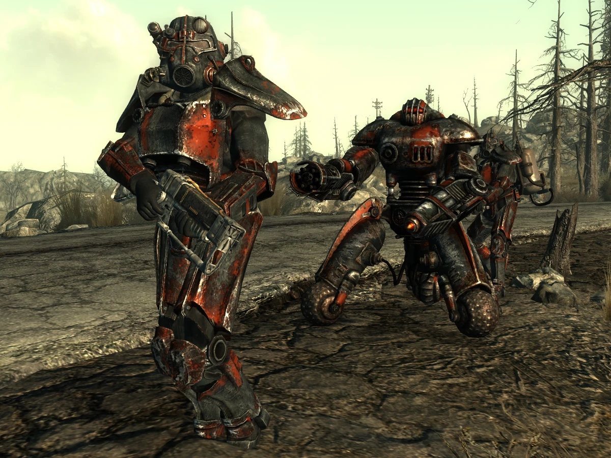
医療・ロボット・電子技術
応用戦闘兵器以外にも、ブラザーフッドは多種多様なハイテク技術にアクセスできます。
これには生体サイバネティクスや戦闘用埋め込みインプラント、音波兵器や超高性能センサー、そしてインスティチュートや他者の『テレポート技術を完全にジャミング・遮断するシステム』が含まれます。
ロックダウン下でも兵士の実戦スキルを極限に維持するための「VR（仮想現実）ポッドトレーニングシステム」も保有しています。
多くの支部では、戦闘部隊を補強するために、回収・修理した様々なロボットを戦場に投入します。これにはロボブレイン、セントリーボット、Mr.ガッツィー、Mr.ハンディなどが含まれ、自軍の兵士を守る肉盾として運用されます。プロテクトロンは、戦闘だけでなく施設のメンテナンスや建築、防衛、さらには『採用担当（リクルーター）』など数多くの役割で再プログラミングされています。
そして最も有名なのは、そのすべてを凌駕する最高峰の巨大プロトタイプ戦闘ロボット『リバティ・プライム（Liberty Prime）』です。
乗り物と航空戦力 (Vehicles)
※『ブラザーフッド・エアシップ』も参照
地上車両
2080年代、アパラチアの「前哨基地デルタ」に駐留するブラザーフッド部隊は、戦前の重装甲車（APC）やさらには「戦車」に一時的にアクセスし、再起動して運用していました。対照的に2160年代初頭の西海岸の部隊は稼働する地上車両をほとんど所有していませんでした。
2105年の「第一遠征軍」は、アパラチアの・タンゴ前哨基地などで移動用に戦前のAPCを使用していたことが知られています。また2277年のキャピタル・ウェイストランドにおけるエンクレイヴとの全面戦争中、ブラザーフッドはロックランドの車両トンネルを占領し、戦前の軍用トラック数台を改修し、ワシントンからの部隊輸送や「アクア・ピューラ」などの物資を最前線に輸送するために運用しました。
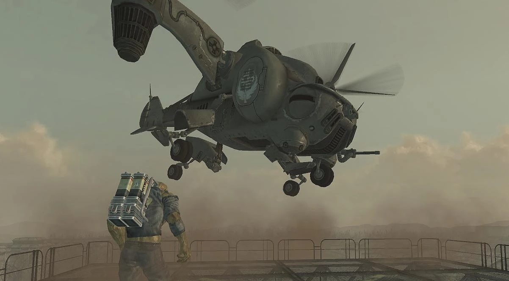
飛行船とベルチバード空軍
極初期（2080年代）のブラザーフッドは、創設メンバーに「元米国空軍（USAF）」の退役軍人が装備や経験ごと合流していたため、その恩恵ですでに『ベルチバード（Vertibird）』を運用することができていました。
また、22世紀半ばには探索・偵察目的で使用される「巨大な飛行船の艦隊」全体を保有していましたが、年月が経つにつれて墜落したり、予備部品として解体されたりしました。23世紀までには飛行船は一つも残っておらず（かつて中西部への長距離探索でシカゴに墜落したものが最後です）、これは東海岸との戦争終結時にエンクレイヴのベルチバードを拿捕した（これを『プライド・ワン』と名付けました）ことで、ようやく彼らが”空”へと戻るまで続きました。
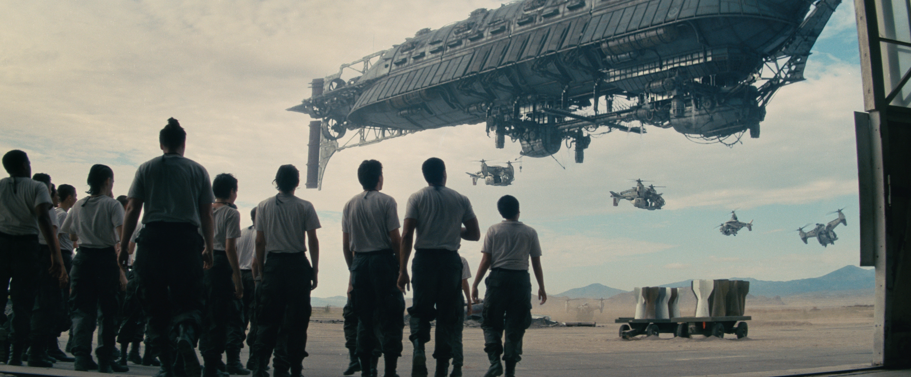
その後、拿捕したアダムス空軍基地を利用して、ブラザーフッドは2282年に最新鋭の巨大飛行船『プリドゥエン（Prydwen）』を進水させました。
プリドゥエンの建造は、回収・修復されたエンクレイヴの機体と「一から手作業で新造された真新しい機体」からなる新しいベルチバード艦隊の拡充と並行して行われました。2287年までにこの新しい空軍の規模はあまりにも巨大になったため、ブラザーフッドはこれらの空軍機を操縦するためだけの『ランサー（Lancer）』として知られる全く新しい階級カーストを新設しました。
2296年までに、ブラザーフッドのすさまじい製造能力はプリドゥエンを「独自の艦隊クラス（プリドゥエン級）」へと昇華させ、9年間にわたり複数の「姉妹船」を建造し続けました。2297年のニューカリフォルニアでの戦闘には、少なくとも4隻の『プリドゥエン級飛行船』からなる空前絶後の大艦隊が投入されています。
研究と製造 (Research and manufacturing)
何世紀にもわたり研究への献身の度合いは揺れ動いてはいますが、ブラザーフッドはかつて西海岸のウェイストランドにおいて「あらゆる科学研究の最前線（人類の最先端）」に立っていました。
例えば22世紀には、物理学の基礎理論から、天文学への探求、古いレーザー兵器の再構築、さらには「タイムトラベル」の理論的構築に至るまで、信じられないほど幅広い研究が行われていました。
多くのスクライブたちは、核反応の真実や、時間が巻き戻せる可能性、宇宙が拡大し続けるのかそれとも崩壊するのかといった「戦前の科学者と同じレベルの思索」を基地の中で日常的に語り合っていました。
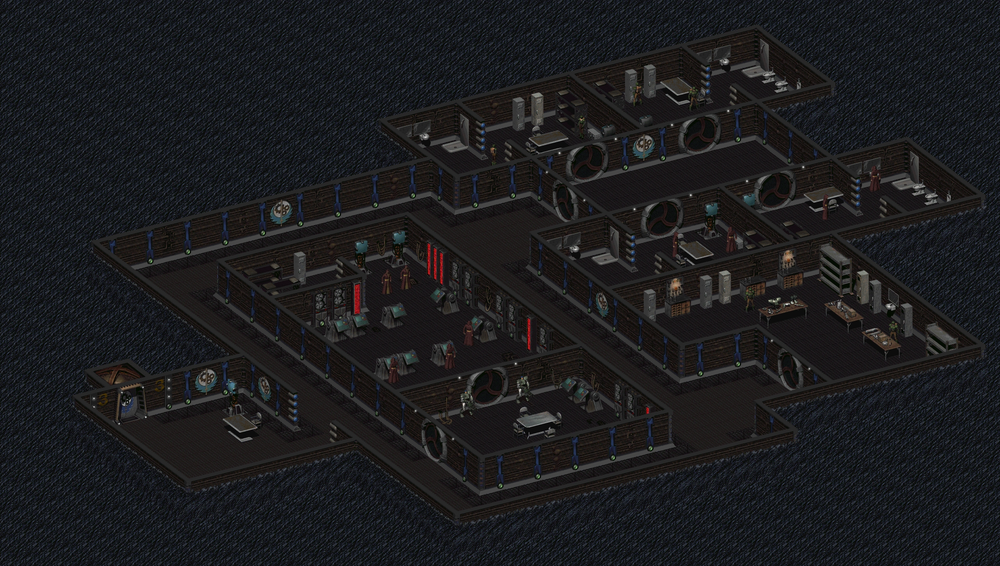
西海岸の製造能力 (West Coast)
製造能力に関していえば、西海岸のブラザーフッドは主にナイト（技術騎士）たちによる「一からの手作り（Hand-made）」に依存しています。
限られた物資が常に課題となりますが、コンピュータ上の試作データと現実の製造プロセスの乖離に日々悩まされています。それにもかかわらず、ブラザーフッドは自らを支えるだけでなく「余剰分を使って周辺地域と水・食料を取引できる」ほど大量のハイテク兵器や弾薬の「高い製造出力」を維持することに成功していました。
2161年までに、ロストヒルズのブラザーフッドは、当時のヘッドスクライブである「ブリー（Vree）」の管理の下で、真新しいレーザー兵器の大量製造と独自改造を行っていました。
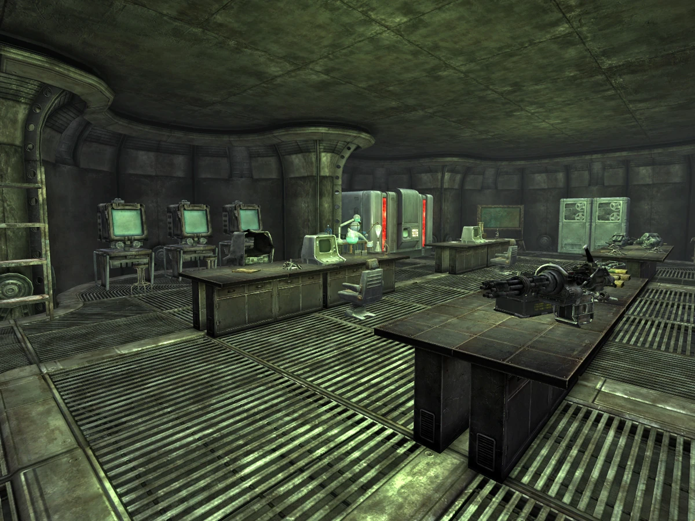
彼らは戦前の技術を維持・改善するだけでなく「ゼロから新しいハイテク機器を一から製造できる能力」を保持しています。
手作業による製造と高水準な知識により彼らのアーティファクトは常に一級品の品質を誇っていましたが、これらの手作りによる生産能力の限界は、結果的に「新軍事大国（NCR）」との数十年に及ぶ果てしない消耗戦において、彼らの巨大な工業力と安価な武器の超大量生産の前で敗北する致命的な要因にもなりました。
なお、テクノロジーへの執着は2296年のサンフェルナンドの騎士団にも引き継がれており、彼らは放射線シグナルを追跡できる専用のハンドヘルド機器を独自開発・製造し実戦投入しています。
東海岸軍事施設の脅威の爆発力 (East Coast / Appalachia)
アパラチアのブレイクスルー
スコーチとの死闘はブラザーフッドにいくつかの技術的ブレイクスルーをもたらしました。
西海岸の本部にいたスクライブ・タカノは遥か彼方のアパラチア支部を支援するため、衛星通信越しに大量の設計図を送りました。
これには未知の鉱石を利用した『ウルトラサイト・パワーアーマー（量産はされず）』や、スコーチビーストを追跡するための音波キャニングモジュール、敵を罠（キルボックス）におびき寄せる音波発生器などが含まれ、現地のスクライブ・グラントがそれらを現地仕様に調整し実戦生産しました。後年の第一遠征軍も、アトラス砦の地下で発見したウルトラサイト・バッテリー・セルを、スクライブ・オデッサ・バルデスが見事にリバースエンジニアリングして通信機を再稼働させています。
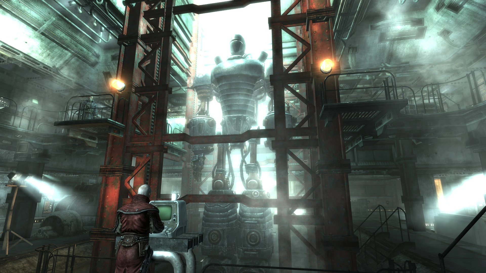
キャピタル・ダイナミクス
2250年代半ば、キャピタル・ウェイストランドでの製造は当初、物資や重要部品の不足により制限されており、浄化プロジェクトへの貢献も諦めざるを得ませんでした。
しかし2270年代までに、支部は東海岸最大の技術的な備蓄庫を利用できる環境におり、ブラザーフッドは「多数のアイテムを真新しくゼロから作り続ける（Produce brand new from scratch）」ことが可能になっていました。
最大の研究成果の一つは、戦前の米国政府ですら成し遂げられなかった『巨大戦闘要塞ロボットリバティ・プライムの電力システムの完全再構築と実戦起動（The activation of Liberty Prime）』であり、2277年に20年の努力の末ついに完成させました。また、エンクレイヴのベルチバードを撃墜するため、彼らはオルニー発電所の高電圧テスラコイルを利用して独自仕様の「テスラ・キャノン」を設計・自作しました。
エンクレイヴとの戦争中、彼らの洗脳デスクローに対抗するため、スクライブ・バリンクール（Vallincourt）はエンクレイヴの通信信号をハッキングして逆にデスクローをテイム・使役できる「デスクロー制御スクランブラー（Deathclaw control scrambler）」を発明しました。
また、スクライブ・ボウディッチ（Bowditch）はエンクレイヴの圧倒的な装甲に対抗するため、自軍の旧式T-45dパワーアーマーに徹底的な新型の対エネルギー保護コーティング措置を施し防御力を底上げし、さらにはスクライブ・ピーボディ（Peabody）の主導のもと、通常のAER9レーザーライフルのコンペンセーター（安全性）を意図的に排除することでエンクレイヴの黒いパワーアーマーを焼き切る死の光線銃へと悪魔的改造を行い、鹵獲したエンクレイヴのプラズマ兵器群を瞬く間にリバースエンジニアリングして自軍の標準装備へと落とし込みました。

アダムス空軍基地の接収と進撃の東海岸連合
2278年以降、東海岸の生産体制は狂気的なまでに効率的かつ巨大化しました。
レイヴン・ロックとアダムス空軍基地でエンクレイヴを完全に鎮圧した後、ブラザーフッドはエンクレイヴの保有していた『超巨大防衛製造施設一式とそのリソース』への無制限のアクセス権をすべて獲得しました。
アダムス空軍基地の信じられない軍事製造能力は、前述のように『わずか4年の間に巨大飛行船プリドゥエンを新規建造させる』ほどの出力があり、さらにその後9年の間に同型の飛行船軍をいくつも新造しました。
また、彼らが東海岸で「パワーアーマーのスーツ自体をゼロから無限に生産する能力」を実用化したかは公式には確認されていませんが、パラディン・ダンスなどは連邦の巨大自動車工場（コルベガ組み立て工場など）の設備を、パワーアーマーを組み立てる「完全な生産ライン」として再利用しようと目論むほど、彼らの製造・エンジニアリングに対する執着は底なしでした。
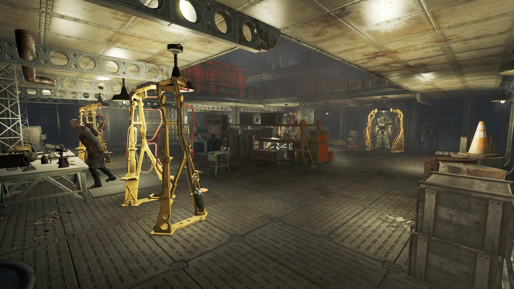
技術革新（インスティチュートとの戦い）
2296年より前には、東海岸のブラザーフッドは標準的な「T-60パワーアーマー」に大幅な改造を施していました。
戦前の重くて巨大な背部ジェットパックに代わり、それぞれの『手首の内部に格納できる小型ロケットシステム』を追加しました（TV版で描かれたアイアンマンのような飛行システム）。この手首型スラスターは小型でありながら、信じられないほどの速度と長距離飛行で分厚い重装甲スーツを空中に推進させることができ、現在では標準装備となっています。
ブラザーフッド・オブ・スティールはまた、インスティチュートの最大の武器であるテレポーテーション波（暗号化RF波）を広範囲・永久にジャミング・無効化する『電磁場エミッター』まで独自に開発・製造し、ボストン空港への転送強襲を完全に無力化しました。
より小規模な革命的発明品としては、複雑な発煙・通信システムを搭載した『ベルチバード・シグナル・グレネード』や、放射線耐性を極端に高める極限の薬物（X-111化合物）の実用化なども行っています。
テクノロジーの再分配と取引 (Redistribution of technology)
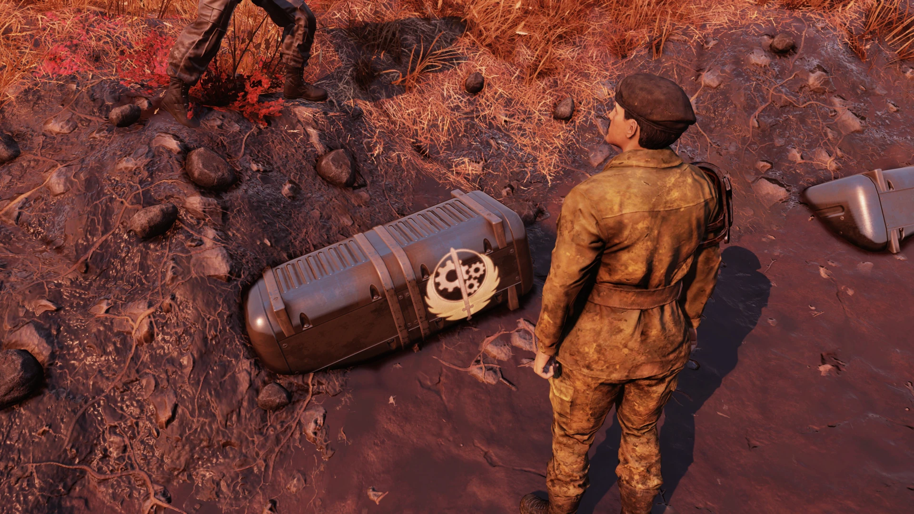
ブラザーフッドが外部のウェイストランド人に「強力なテクノロジーを（意図して）再分配・供与した」歴史の最初期の例は、第一遠征軍のアパラチアへの旅の途中で起こりました。
中西部の軍事施設から極めて強力な「ヘルストーム・ミサイルランチャー」の備蓄を獲得した後、第一遠征軍の部隊は、レイダーの巨大な軍勢からの切迫した大虐殺の脅威にさらされている無防備な町に遭遇しました。パラディン・ラハマニは町に残って戦うことを選択しましたが、ナイト・シンはこのミュータントやレイダーの群れに対して「村人たちに『戦うチャンス』を与えるため、我々が接収した大量のミサイルランチャーを一時的に村人自身に配備（武器供与）する」ことを提案しました。
この行動は「テクノロジーを自らの手から手放す」というブラザーフッドの絶対に破ってはならない標準プロトコル（聖なる教義）に完全に違反するものでしたが、それにもかかわらず、ラハマニは個人の直感的な躊躇を押し殺し、シンの計画『一時的な現地住民の重武装化』を承認しました。
しかし、このブラザーフッドの軍事的支援計画は見事に大失敗に終わりました。
ミサイルランチャーで武装した村人たちがブラザーフッドの兵士と共に戦ったにもかかわらず、レイダーは町の住民を完全に皆殺しにし、そしてなんと『戦利品としてヘルストーム・ミサイルランチャーを持ち去ってしまった』のです。
村人を救うための決断が「ブラザーフッドの強力な大量破壊兵器をレイダーの手に永遠に渡してしまう」という最悪の悲劇を引き起こし、これによって彼らは、後のアパラチアにおいて、自分たちが流出してしまった兵器をレイダーから武力で強奪し直さなければならなくなりました。
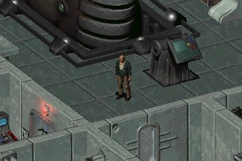
2150年代以前、ニューカリフォルニアのブラザーフッド・オブ・スティールは、「ハブ（The Hub）」の商人たちと強力な貿易関係を確立していました。
きれいな食料やその他のアイテムと引き換えに、ブラザーフッドは技術の結晶である『ブリー（Vree）とロスト・ヒルズのスクライブたちによって新しく製造された最新のエネルギー兵器』を大量に流通・分配しました。
これにより、開拓地の集落や商人はレイダーなどの脅威から身を守る絶大な保護レベルを獲得しました。クリムゾン・キャラバンやファー・ゴー・トレーダーズ（Far Go Traders）の商人たちも、自分たちのキャラバンでこれらの武器を販売することで、さらに広範囲にこれらの「教団製テクノロジー兵器」を広めました。
この時期までに、なんと『ブラザーフッドは西海岸のウェイストランド地域における世界最大の武器の製造元・分配者（ディストリビューター）』となっていました。ハイ・エルダーのジョン・マクソンは、「文明化されたウェイストランドで見られる武器のほとんどはブラザーフッドが製造・流通させたものだ」と言及しているほどです。これほどウェイストランドが彼らの兵器に依存していたにもかかわらず、ブラザーフッドは「他人に害を及ぼすために技術を悪用する（ウォーター・マーチャントやレイダーのような）」グループとは頑なに武器の取引を行うことを拒否しました。
また、2161年のマスターの軍隊の残党が壊滅した後も、ブラザーフッドは驚異的な高度技術を少しずつ荒れ地に再導入し始め、「自発的な平和維持部隊（テクノロジー警察）」としてウェイストランドの復興に貢献しました。その一例として、「もう二度と専制的なオーバーシアー（監督官）の支配に依存したくない」と反乱を起こしたVault 13の住人たちのために、教団が『超高度なメインフレームコンピューター（自律的都市管理システム）』を設計・販売し、Vault 13に取り付けたという歴史もあります。
2277年以前の東海岸（キャピタル・ウェイストランド）では、延々と続くミュータントとの衝突によって組織の人手と資源が薄く引き伸ばされていました。
前線の兵士の維持に手一杯で、戦死した兵士の回収作戦（ホロタグの回収）を行う余裕すらなかったため、本部のスクライブ・ジェイムソンは非常に現実的な解決策を取りました。彼女は教団の「コーデックス（名簿記録）」を維持するため、前線で死んだ兄弟のホロタグ回収作業を、教団に忠実な「一般の有能なウェイストランド人（プレイヤー等）」に外部委託する契約を結んだのです。
この任務を完了するための見返りとして、組織は現金のキャップを支払うだけでなく、『ブラザーフッドが製造した（または秘蔵の）最新技術や兵器』へのアクセス・購入権を外部の人間に自発的に提供しました。
同様の出来事として、2277年の「アウトキャスト前哨基地」において、指揮官であるプロテクター・マクグロウ（McGraw）は、教団の部外者であろうと自分の持つPip-Boyを使ってアンカレッジのシミュレーションシステムを解除し、基地内の『VSSアーモリー』の武器庫をアンロックしてくれたのであれば、武器庫に眠るすべての最高峰の戦前テクノロジーの利益の大部分を「公平な山分け」として部外者と分け合う（Distribution）という大胆な取引を行いました。
この画期的かつ教義的に危険な決定は、ディフェンダー・シブリー（Sibley）や他の保守的なアウトキャストたちを『外部の野獣どもに神聖なる技術を分け与えるなどあり得ない』と激怒させ、最終的に前哨基地での内部反乱・殺し合いの暴動を引き起こしましたが、マクグロウは「取引は取引だ。私たちの義務を果たす」と頑なに主張し、教義を越えて約束を守り抜きました。
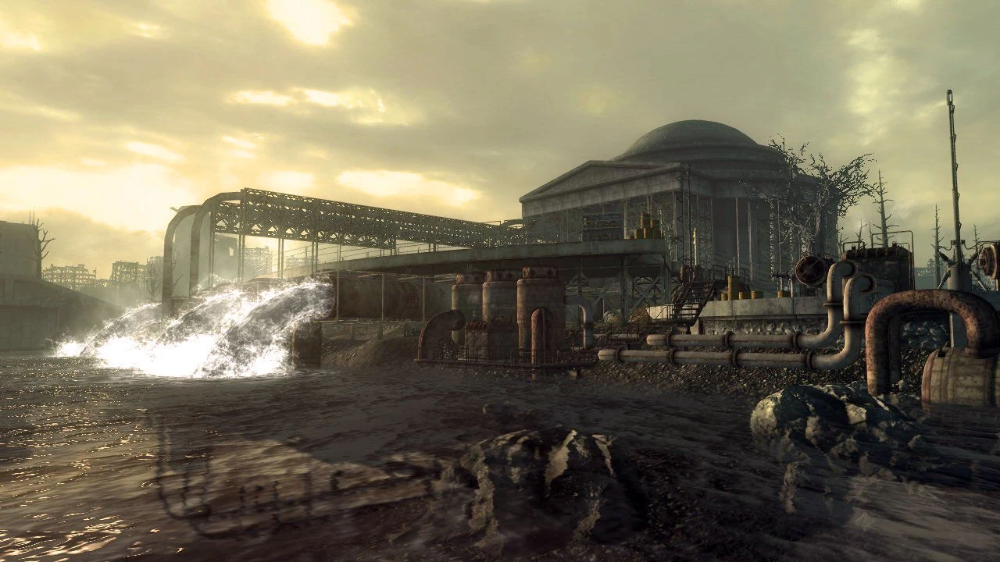
東海岸ブラザーフッドがエンクレイヴとの戦争に勝利し、「プロジェクト・ピュリティ（巨大水質浄化施設）」を奪還・稼働させた後、エルダー・リヨンズ率いるブラザーフッドは、ここで得られた巨大な利益と水を独占（隠匿）するのではなく、キャピタル・ウェイストランドと東海岸の人々に『完全に無料（Free of charge）』で無条件にきれいな水を配給し始めました。
大規模な配給作業を遂行するためリベット・シティ（Rivet City）の警備隊にキャラバン護衛の支援を要請し、その見返りとして警備員たちに「エンクレイヴから強奪した超高度なエネルギー技術や兵装」をキャップと共に『報酬』として惜しげもなく気前よく与えました。
このテクノロジーと水の献身的な無償の再分配の結果は数十年後にも響いており、2287年においてマクソン体制に移行した後も、レールロードのディーコンが「キャピタルの人間は誰でもきれいな水が飲める」ことに言及し続けています。
2287年の連邦（コモンウェルス）においても、ブラザーフッドの歴史的遺物の探索を手伝った部外者（唯一の生存者など）に対して、組織は「ライト・オーソリティ（Righteous Authority）」のような独自の極大改造を施した特別なテクノロジー兵器を報酬として「支払い」の形で提供することが標準的な慣行となっています。
開発と設定の裏話 (Behind the scenes)
- 新カリフォルニア共和国（NCR）などの巨大国家のグループと比較して相対的に兵士の総数は「かなり少ない（小規模）」にもかかわらず、ブラザーフッドは戦後のアメリカ合衆国で『最も神出鬼没で、米国全土のあらゆる場所に広範に点在し存在している派閥』です。
- テクノロジーに関しては極端に縄張り意識が強く、インディアンのような執着心でテクノロジーを死守します。「Fallout: New Vegas」の中の一つの記録では、あるエルダーが『未知のテクノロジーを（意図的であれなんであれ）誤って破壊してしまった』だけで、教団の法律により厳しく処罰・解任措置されたというほどの病的な執着が明かされています。
- 「Fallout 3」のシタデルにあるターミナルの長距離通信の記録によれば、マクソン州（ロスト・ヒルズ）の部隊は、少なくとも2277年まではNCRにおける教団の領地であったこの地域で完全に保護・存続されていました。また、それと同時に西海岸のブラザーフッド・オブ・スティール内で『非常に深刻な内紛（内戦の可能性）』が発生しており、この不確実で危険な紛争状態のため、幼いアーサー・マクソンを遥か遠くの東海岸（シタデル）に避難させながら育てざるを得なかったことが言及されています。
「最終的にこの奴ら（ブラザーフッド）がどういう形でゲームに収まったかについてはとても気に入っているが、彼らの起源自体はそれほどオリジナルなものではなかった。私は単に、初代『Wasteland（フォールアウトの事実上の前作）』に登場するガーディアン・シタデルの僧侶たちと『完全に同じグループ』を作りたいと思っていただけだった。
それはWastelandにおけるお気に入りの要素の一つだったんだ。隔離された古い石の要塞に住むローブ姿の狂った修道士たちは、ありえないほどの狂気のエネルギー兵器を振り回し、敷地に入ってくる不法侵入者をすべて塵にする。
なんてファンタスティックなんだ！
当初、ブラザーフッドは『旧世界の技術を生かし続けるために存在する、ポスト・アポカリプス世界の宗教的騎士団』と全く同じものにするつもりで意図的に作られていた。だが、Wastelandの虚無的なガーディアンたちとは明らかに違って、私はただ『プレイヤーがこの恐ろしいグループと友達になり、仲間になり、そして最終的に彼らのクソ素晴らしい装備（パワーアーマー）をすべて手に入れられる存在』にしたいと本気で願っていたんだ。
このため、中世の修道士というテーマを維持しながらも、ブラザーフッドは狂信的な狂った狂信者の集団というよりは、「部外者に対する不信感を抱くが、筋が通った本物の騎士修道会」という側面を徐々に強くしていった。
彼らを『Gamma World（純血の騎士団）』や『Warhammer 40K（帝国技術カルト）』などの極端な狂信カルトのコンセプトに似せてはいるものの、結局のところ、私はただ『純粋なパワーアーマーを着て、バイブロソードとガトリング・レーザーを振り回すハイテク中世騎士』という子供じみたアイデアが心の底から大好きだっただけなんだ。あれは完全に、俺自身へのファンサービスだったと言っていい」
※彼らのイデオロギーは、人類が巨大なテクノロジーを安全に扱える準備ができる日まで、すべての科学知識を守り通すことに命をかける狂信的なカトリック修道士の姿を描いた「A Canticle for Leibowitz（黙示録3174年）」から非常に直接的な影響を受けています。
※公式のベセスダ商品のグッズとして使われている「ブラザーフッド・オブ・スティールの旗（Flag）」のデザインは、少し面白い経緯で生まれたものです。
Fallout 3のリリースの際、シタデルの屋上に風になびいていた旗はゲーム内では非常に低解像度のテクスチャを無理やり引き伸ばして（ブレンド効果でごまかして）使用していましたが、リリース直後に有志のファンがこの低解像度のテクスチャを解析して『こんな感じの丸みのある歯車だったはずだ』と想像で綺麗にレタッチし直し、Wikiaサイトに投稿しました。
信じられないことに、後年になってベセスダ公式がグッズなどを「外注開発」する際に、資料を探すためインターネットを検索した結果『Wikiにアップロードされていたファンメイドの再創造アーティファクト画像』を本物の公式データと誤認して拾い上げてしまい、それがそのまま大量の公式ポスターやパーカーなどに使われてしまいました。これが「現在の公式のラウンド状のエンブレムデザイン」として10年以上定着しているものになります。
Falloutシリーズのまさに「顔」とも言える存在、ブラザーフッド・オブ・スティール。初代から最新作のTV版に至るまで、彼らが紡いできた歴史や信念の移り変わりは、そのままウェイストランドの歴史そのものと言っても過言ではありません。
初期の排他的で秘密主義なカルト集団としての姿から、リオンズ・エルダーによるキャピタル・ウェイストランドでの人道的な活動、そしてマクソン体制下の軍事的で強硬な巨大派閥への変遷など、時代や地域ごとに異なる「正義」の在り方を提示してくれるのが本当に魅力的です。
アパラチアにおけるタガーディの悲壮な決断や、TVシリーズにおける宗教的なテイストを強めた姿など、常に新しい一面を見せてくれる彼らの物語からは目が離せません。
パワーアーマーに身を包み、ベルチバードで空を駆ける彼らの威容は、何度見てもプレイヤーの心を熱くさせてくれますね。
This article was created by translating and editing Brotherhood of Steel from Nukapedia: The Fallout Wiki.
Licensed under the Creative Commons Attribution-Share Alike License (CC BY-SA 3.0).
© Overseer Mohi's Terminal — Fallout Lore Archive
コミュニティ維持のため、寄付を受け付けております。